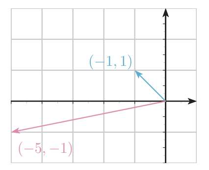
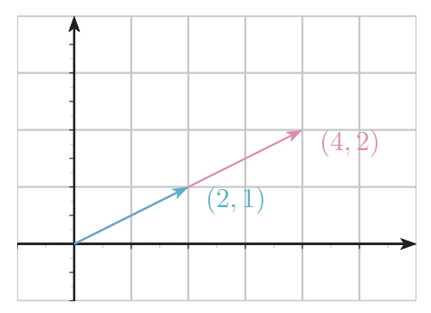

Valores y vectores propios
Cuáles son las direcciones que una aplicación lineal no gira (solo las estira, las encoge o las invierte), cómo se encuentran con el polinomio característico $|A-\lambda I|$, qué se conserva al cambiar de base (Teorema 4.4) y cómo se miden las dos «multiplicidades» de un valor propio: la algebraica $\alpha$ (cuántas veces es raíz) y la geométrica $d$ (cuántos vectores propios independientes tiene). Es la herramienta central de los temas 4.3 (diagonalizar), 4.4 (Jordan), 5.3 y 6.
0Antes de empezar U p.148-149
Una matriz $A$ «hace algo» a cada vector: lo gira, lo estira, lo aplasta. Casi siempre cambia su dirección. Pero hay direcciones privilegiadas en las que $A$ se comporta como un simple número: el vector se queda en su misma recta y solo se multiplica por un número $\lambda$. Esas direcciones son los vectores propios y esos números los valores propios. Conocerlos es conocer «el esqueleto» de $A$: en una base formada por vectores propios la matriz sería diagonal (tema 4.3).
Qué necesitas saber ya
- Del tema 1.3: determinante de una matriz $2\times2$ y $3\times3$ (Sarrus, desarrollo por adjuntos), propiedades de las operaciones por filas y columnas, $|AB|=|A||B|$, $A$ regular $\iff|A|\neq0$, determinante de una triangular (U p.26-27).
- Del tema 1.4: un sistema homogéneo $MX=0$ tiene soluciones no nulas $\iff\operatorname{rang}M\lt n$, y el número de parámetros es $n-\operatorname{rang}M$ (Rouché-Fröbenius, U p.30).
- Del tema 3.2: núcleo de una aplicación lineal y $\dim\operatorname{Nuc}=n-\operatorname{rang}$.
- Del tema 4.1: matrices semejantes, $A'=P^{-1}AP$ (Def. 4.5): son las matrices de un mismo endomorfismo en bases distintas.
Mapa del tema
| Apartado | Qué contiene | Dónde |
|---|---|---|
| 1 Idea geométrica | Direcciones que $f$ no gira; Ej. 4.6-4.7; figuras 4.1-4.2 | U p.148-151 · L §5.1 p.267 |
| 2 Definiciones | Def. 4.6, 4.7, 4.8; vectores propios de valores distintos son libres | U p.151-152 · L p.267-270 |
| 3 Polinomio característico | Def. 4.9, 4.10; triangulares; $0$ valor propio $\iff$ singular | U p.152-153 · L §5.2 p.274 (Ej. 1) y p.276, §5.1 p.269-270 |
| 4 Invariancia | Teor. 4.4; traza, determinante, Ej. 4.9-4.10 | U p.153-155 · L p.277 |
| 5 Multiplicidades | Def. 4.11, Teor. 4.5 ($1\le d\le\alpha$), Ej. 4.11-4.12 | U p.155-159 · L p.276, 280 |
| 6 Receta completa | Pasos y animación interactiva | P |
| 7 Tabla Lay ↔ U | Vocabulario que no coincide | L |
| 8 Ejercicios del libro | E 4.11–4.23 + 10 ejemplos propios + autoevaluación | E pp.129-139 · U p.190 |
| 9 Ejemplos de examen | 11 ejercicios de exámenes anteriores + 2 propios | X |
(a) Comprobar si un número es valor propio ($|A-\mu I|=0$) o si un vector es propio ($AX=\lambda X$, $X\neq0$) y qué valor propio le corresponde (E 4.12, 4.13, 4.16; X Feb. 2023, Sept. 2025). (b) Calcular el polinomio característico, los valores propios y los subespacios propios con sus dimensiones (E 4.15, 4.17-4.19; X Sept. 2019, Feb. 2026). (c) Problemas «inversos»: hallar parámetros de la matriz sabiendo vectores o valores propios (E 4.22, 4.23; X Sept. 2022, Feb. 2017). (d) Teoría de verdadero/falso: valores propios de $A^k$, $A^{-1}$, $AB$, matrices semejantes, multiplicidades (E 4.11, 4.14, 4.20, 4.21; X Feb. 2024). En el examen hay que desarrollar el razonamiento, no solo dar el resultado. Maxima no entra en el examen.
- U p.153 (polinomio característico): escribe $|A-\lambda I|=\lambda^n-(a_{11}+\dots+a_{nn})\lambda^{n-1}+\cdots$, que solo es exacto para $n$ par. Lo correcto es $|A-\lambda I|=(-1)^n\lambda^n+(-1)^{n-1}(\operatorname{tr}A)\lambda^{n-1}+\cdots+|A|$ (por ejemplo, para $n=3$ empieza por $-\lambda^3+(\operatorname{tr}A)\lambda^2$). La conclusión de U (la traza es invariante) sigue siendo cierta.
- U Def. 4.8 (p.152): dice que «el conjunto de los vectores propios» de $\lambda$ es un subespacio. Precisemos: hay que añadir el vector $0$, que no es vector propio (Def. 4.6 exige $x\neq0$); el subespacio propio es $L_\lambda=\operatorname{Nuc}(A-\lambda I)$ = vectores propios de $\lambda$ $\cup\{0\}$.
- U no enuncia que la traza es la suma y el determinante el producto de los valores propios (con multiplicidades). Se deduce en el apartado 4 («propio») y se usa mucho en los ejercicios.
- U no demuestra (p.152) que los vectores propios de valores distintos son libres; aquí se da la prueba para dos vectores.
- E 4.11: solo prueba «$\lambda$ valor propio $\Rightarrow\lambda=1$», no que $1$ sea efectivamente valor propio; además escribe «$\Leftrightarrow$» ($\lambda^2v\Leftrightarrow\lambda^2$ es valor propio de $A^2$) donde solo vale «$\Rightarrow$». E 4.12: «$\lambda_1=-1$» debe ser $\lambda_2=-1$, y escribe $|A-\lambda I|=(\lambda-3)^2(\lambda+1)$ (con $n=3$ lleva un signo $-$). E 4.13: para descartar B y C basta, y hay que decir, que $-2$ no es raíz. E 4.18: descarta A y B «porque no contienen el $0$» (argumento que valdría también contra C): la razón sólida es que les faltan vectores propios. E 4.19: un $+1$ por $-1$ en el determinante, la salida de Maxima mal transcrita y usa $\alpha$ como parámetro. E 4.23: un corchete de más en la salida de Maxima. Los «$\neq$» se pierden en el texto digital del libro; en el libro impreso los enunciados son correctos.
- Trampa de vocabulario: «subespacio propio de un valor propio» (el $L_\lambda$ de este tema) no es lo mismo que «subespacio propio» de un conjunto (distinto de $\{0\}$ y del total). En X Sept. 2023, problema 7, «calcule un subespacio propio de la imagen de $f$» significa lo segundo y se resuelve en el tema 3.2.
- Notación de los subespacios: U numera los subespacios propios por orden, $L_1,L_2,\dots$ (en el Ej. 4.11 coincide con los valores $1,2,3$ por casualidad); aquí $L_\lambda$ lleva el valor propio ($L_2$ es el de $\lambda=2$). Lo avisamos en los ejemplos que lo necesitan.
- Convenio: en endomorfismos, U escribe $x_B=Px_{B'}$ y $A'=P^{-1}AP$ (nuestro $Q=P$ del tema 3.5). En U, $\lambda\in\mathbb R$: las raíces complejas no son valores propios.
1La idea geométrica: direcciones que $f$ no gira U p.148-151
Piensa en una lámina de goma sobre la que dibujas flechas desde el origen. Tiras de la lámina de cierta manera (eso es la matriz $A$). Casi todas las flechas se mueven y cambian de dirección. Pero puede haber flechas que, tras el tirón, siguen apuntando en la misma recta: o se alargan ($\lambda\gt1$), o se acortan ($0\lt\lambda\lt1$), o se dan la vuelta ($\lambda\lt0$), o quedan clavadas en el origen ($\lambda=0$). Esas son las flechas propias, y el número por el que se multiplican es el valor propio.
L §5.1 p.267$f:\mathbb R^2\to\mathbb R^2$, $f(x_1,x_2)=(3x_1-2x_2,\ x_1)$, con matriz $A=\begin{pmatrix}3&-2\cr1&0\end{pmatrix}$.
- $f(-1,1)=A\begin{pmatrix}-1\cr1\end{pmatrix}=\begin{pmatrix}-5\cr-1\end{pmatrix}$. Los vectores $(-1,1)$ y $(-5,-1)$ no son proporcionales: apuntan en direcciones distintas (Figura 4.1).
- $f(2,1)=A\begin{pmatrix}2\cr1\end{pmatrix}=\begin{pmatrix}4\cr2\end{pmatrix}=2\begin{pmatrix}2\cr1\end{pmatrix}$. Aquí la imagen sí es proporcional al original (Figura 4.2).


| Transformación | Matriz | Direcciones que no gira |
|---|---|---|
| Simetría respecto de la recta $y=x$ | $\begin{pmatrix}0&1\cr1&0\end{pmatrix}$ | la propia recta $y=x$: $\lambda=1$ (vector $(1,1)$); la perpendicular se invierte: $\lambda=-1$ (vector $(1,-1)$) |
| Proyección sobre el eje $OX$ | $\begin{pmatrix}1&0\cr0&0\end{pmatrix}$ | el eje $OX$ queda fijo: $\lambda=1$, $(1,0)$; el eje $OY$ se aplasta al origen: $\lambda=0$, $(0,1)$ |
| Giro de $90^\circ$ | $\begin{pmatrix}0&-1\cr1&0\end{pmatrix}$ | ninguna: todo vector cambia de recta; no hay valores propios reales |
Fíjate en que el valor propio $0$ aparece (proyección) y en que puede no haber ninguno (giro). Las dos observaciones son importantes más adelante.
propioMueve el vector $x$ y comprueba cuándo $Ax$ queda alineado con él. Con $A$ del Ejemplo 4.6 de U, prueba $x=(2,1)$ (propio, $\lambda=2$) y $x=(1,1)$ (propio, $\lambda=1$, que U no menciona), y luego pulsa «Giro 90°» o «Doble con d = 1» para ver qué pasa cuando faltan valores propios o vectores propios. Más abajo, la receta completa se apoya en estos mismos cálculos.
P2Vector propio, valor propio y subespacio propio U p.151-152
Sea $f:V\to V$ un endomorfismo de $V$ con matriz $A$ en una base fijada. Un vector $x\in V$ es un vector propio (o autovector) de $f$ y de su matriz $A$ si $$f(x)=AX=\lambda X\quad\text{para algún }\lambda\in\mathbb R\ \text{ y }\ x\neq0.$$ (Aquí $X$ es la matriz columna de las coordenadas de $x$: U escribe $AX$, no $Ax$. En lo que sigue abreviamos y escribimos también $Ax$ cuando no hay riesgo de confusión.)
U p.151 L §5.1 p.267El número $\lambda\in\mathbb R$ de la definición anterior es el valor propio (autovalor) asociado al vector propio $x$. Un vector propio tiene un único valor propio (si $Ax=\lambda x=\mu x$ con $x\neq0$, entonces $\lambda=\mu$), pero un valor propio tiene infinitos vectores propios: todos los múltiplos no nulos de uno de ellos (y más, si $d\gt1$).
U p.151Con $A=\begin{pmatrix}3&-2\cr1&0\end{pmatrix}$: $x=(2,1)$ es vector propio y $\lambda=2$ su valor propio, porque $A\begin{pmatrix}2\cr1\end{pmatrix}=2\begin{pmatrix}2\cr1\end{pmatrix}$ y $x\neq0$. Lo mismo vale para $(4,2)$, $(-2,-1)$, $(2t,t)$ con $t\neq0$.
U p.151Dado un valor propio $\lambda$ de $A$ (de orden $n$), el subespacio propio (o de vectores propios asociados a $\lambda$) es $$L_\lambda=\{x\in V:\ AX=\lambda X\}=\{x:\ (A-\lambda I)X=0\}=\operatorname{Nuc}(A-\lambda I)=\operatorname{Nuc}(f-\lambda\,\mathrm{Id}).$$ Contiene a todos los vectores propios de $\lambda$ y al vector $0$. Se calcula resolviendo el sistema homogéneo $(A-\lambda I)X=0$.
U p.152 L §5.1 p.268$A-2I=\begin{pmatrix}1&-2\cr1&-2\end{pmatrix}$. El sistema $(A-2I)X=0$ se reduce a la única ecuación $x_1-2x_2=0$ (rango $1$, así que $2-1=1$ parámetro): $L_2=\{(2t,t):t\in\mathbb R\}=\langle(2,1)\rangle$, una recta por el origen.
U p.152Son dos cosas distintas. El vector $0$ nunca es vector propio (cumple $A0=\lambda0$ para todo $\lambda$, así que no distingue nada; la definición lo excluye). El número $0$ sí puede ser valor propio: significa $AX=0$ para algún $X\neq0$, es decir, $\operatorname{Nuc}A\neq\{0\}$ (la proyección del apartado 1). Y, por el mismo motivo, «la suma de dos vectores propios del mismo valor propio» puede ser el vector $0$, que no es propio (ver X Feb. 2024).
Si $\lambda_1,\dots,\lambda_k$ son valores propios distintos de $A$ y $x_i$ es un vector propio de $\lambda_i$, entonces $\{x_1,\dots,x_k\}$ es un sistema libre. Equivalentemente: los subespacios propios de valores distintos solo comparten el $0$ ($L_\lambda\cap L_\mu=\{0\}$) y su suma es directa (U p.152, sin demostración).
Prueba para dos vectores (idea general): supón $\alpha x_1+\beta x_2=0$. Aplica $A$: $\alpha\lambda_1x_1+\beta\lambda_2x_2=0$. Multiplica la primera igualdad por $\lambda_1$ y resta: $\beta(\lambda_2-\lambda_1)x_2=0$. Como $\lambda_2\neq\lambda_1$ y $x_2\neq0$, queda $\beta=0$; y entonces $\alpha x_1=0$ da $\alpha=0$.
U p.152 L §5.1 p.270En el Ejemplo 4.6, $(2,1)$ ($\lambda=2$) y $(1,1)$ ($\lambda=1$) son libres: forman una base de $\mathbb R^2$ formada por vectores propios. Si en $\mathbb R^3$ hay tres valores propios distintos, hay tres vectores propios libres y, por tanto, una base de vectores propios (tema 4.3). Ese es el gran premio del tema.
propio3Ecuación y polinomio característico U p.152-153 · L p.274, 276
Buscar $\lambda$ y $X\neq0$ con $AX=\lambda X$ parece difícil porque hay dos incógnitas. El truco: pasar todo al mismo lado, $(A-\lambda I)X=0$. Es un sistema homogéneo; siempre tiene la solución $X=0$, y queremos una solución no nula. Eso ocurre exactamente cuando la matriz $A-\lambda I$ es singular, es decir, cuando su determinante es $0$. Así el problema se reduce a resolver una ecuación en $\lambda$.
$$\lambda\ \text{valor propio de }A\iff(A-\lambda I)X=0\text{ tiene solución }X\neq0\iff\operatorname{rang}(A-\lambda I)\lt n\iff|A-\lambda I|=0.$$ La ecuación $|A-\lambda I|=0$ es la ecuación característica (Def. 4.9) y sus soluciones, las raíces características, son los valores propios. El determinante $|A-\lambda I|$ es el polinomio característico (Def. 4.10), de grado $n$ en $\lambda$.
Para $n=2$: $|A-\lambda I|=\lambda^2-(\operatorname{tr}A)\lambda+|A|$. Para $n=3$: $-\lambda^3+(\operatorname{tr}A)\lambda^2-c\,\lambda+|A|$, con $c$ la suma de los menores principales de orden $2$ (no hace falta memorizarla).
U p.152-153 L §5.2 p.274 (Ej. 1) y p.276- $|A-\lambda I|$ resta $\lambda$ solo en la diagonal. Y $|A+kI|=|A-(-k)I|$ es el polinomio evaluado en $\lambda=-k$ (no en $k$).
- Lay lo advierte (§5.1, p.268): la reducción por filas no sirve para hallar valores propios. Escalonar $A$ cambia los valores propios (por ejemplo, $\begin{pmatrix}1&1\cr0&2\end{pmatrix}$ tiene valores $1,2$; con $F_2\to F_2/2$ pasa a $\begin{pmatrix}1&1\cr0&1\end{pmatrix}$, que solo tiene el $1$). Sí se puede operar sobre $A-\lambda I$ una vez fijado $\lambda$ para resolver el sistema $(A-\lambda I)X=0$, y por filas o columnas dentro del determinante $|A-\lambda I|$ (con las reglas del tema 1.3).
- Triangular o diagonal: $A-\lambda I$ también lo es y $|A-\lambda I|=\prod(a_{ii}-\lambda)$: los valores propios son los elementos de la diagonal (con repetición) (U p.26; Lay §5.1, Teorema 1, p.269).
- $0$ es valor propio $\iff$ $|A|=0\iff A$ no es invertible (poner $\lambda=0$; Lay p.270). Por tanto, una matriz regular no tiene el $0$ como valor propio.
- Para saber si $\mu$ es valor propio basta ver si $|A-\mu I|=0$, sin resolver nada más (E 4.12-4.13, 4.18).
$A=\begin{pmatrix}4&1\cr2&3\end{pmatrix}$.
- Polinomio: $|A-\lambda I|=(4-\lambda)(3-\lambda)-2=\lambda^2-7\lambda+10=(\lambda-5)(\lambda-2)$. Valores propios $5$ y $2$. Control: $5+2=7=\operatorname{tr}A$ y $5\cdot2=10=|A|$.
- $L_5$: $A-5I=\begin{pmatrix}-1&1\cr2&-2\end{pmatrix}$, rango $1$; ecuación $x_1=x_2$; base $(1,1)$.
- $L_2$: $A-2I=\begin{pmatrix}2&1\cr2&1\end{pmatrix}$, rango $1$; ecuación $2x_1+x_2=0$; base $(1,-2)$.
- Comprobación: $A(1,-2)^t=(2,-4)^t=2(1,-2)^t$ ✓.
4El polinomio característico no depende de la base (Teorema 4.4) U p.153-155 · L p.277
La matriz de un endomorfismo cambia según la base que elijas (matrices semejantes), pero «las direcciones que no se giran» son propiedad del endomorfismo, no de la base. Por eso los valores propios tienen que ser los mismos en todas las matrices semejantes; y con ellos, el polinomio característico, la traza y el determinante.
El polinomio característico es invariante frente a cambios de base: si $A'=P^{-1}AP$, entonces $|A'-\lambda I|=|A-\lambda I|$.
Prueba: $A'-\lambda I=P^{-1}AP-\lambda P^{-1}P=P^{-1}(A-\lambda I)P$, luego $|A'-\lambda I|=|P^{-1}||A-\lambda I||P|=|A-\lambda I|$, porque $|P^{-1}||P|=1$.
Consecuencias: matrices semejantes tienen los mismos valores propios (con las mismas multiplicidades algebraicas), la misma traza y el mismo determinante. Se habla, pues, del polinomio característico de un endomorfismo.
También se conserva $\dim L_\lambda$ propio: de $A'-\lambda I=P^{-1}(A-\lambda I)P$ y de que el rango no cambia al multiplicar por matrices regulares, $\operatorname{rang}(A'-\lambda I)=\operatorname{rang}(A-\lambda I)$ y por tanto $d=n-\operatorname{rang}(A-\lambda I)$ es el mismo.
U p.153 L §5.2 p.277Si todas las raíces de $|A-\lambda I|$ son reales, $\lambda_1,\dots,\lambda_n$ (repetidas según su multiplicidad algebraica), y como el coeficiente de $\lambda^n$ es $(-1)^n$: $$|A-\lambda I|=(\lambda_1-\lambda)(\lambda_2-\lambda)\cdots(\lambda_n-\lambda).$$ Haciendo $\lambda=0$: $|A|=\lambda_1\lambda_2\cdots\lambda_n$. Comparando los coeficientes de $\lambda^{n-1}$ (el coeficiente es $(-1)^{n-1}\operatorname{tr}A$, corrigiendo la fórmula de U p.153, exacta solo para $n$ par): $\operatorname{tr}A=\lambda_1+\cdots+\lambda_n$. (Con raíces complejas también es cierto, pero U solo trabaja con $\lambda\in\mathbb R$.)
Ejemplo. $A=\begin{pmatrix}1&1&0\cr0&3&3\cr0&4&2\end{pmatrix}$ tiene $\lambda=1$ (vector $(1,0,0)$). Sin calcular el cúbico: $\operatorname{tr}A=6\Rightarrow\lambda_2+\lambda_3=5$; $|A|=1\cdot(6-12)=-6\Rightarrow\lambda_2\lambda_3=-6$. Son las raíces de $t^2-5t-6=0$: $6$ y $-1$.
propio$A=\begin{pmatrix}1&-1\cr2&0\end{pmatrix}$ y $B=\begin{pmatrix}-1&4\cr-1&2\end{pmatrix}$ son semejantes: con $P=\begin{pmatrix}1&1\cr1&0\end{pmatrix}$ se cumple $PA=BP$ (ambos productos valen $\begin{pmatrix}3&-1\cr1&-1\end{pmatrix}$), es decir $A=P^{-1}BP$. Cómo se halla $P$ (como en el tema 4.1): con $P=\begin{pmatrix}a&b\cr c&d\end{pmatrix}$, $PA=BP$ es el sistema lineal $a+b-2c=0$, $-a+b-4d=0$, $a-c+2d=0$, $b-c-2d=0$, de rango $2$: la solución depende de dos parámetros, $a=c-2d$, $b=c+2d$. Hay que cuidar $|P|=-c^2-cd-2d^2\neq0$ (basta $(c,d)\neq(0,0)$); U toma $c=1$, $d=0$, que da $P=\begin{pmatrix}1&1\cr1&0\end{pmatrix}$. Ambas tienen $\operatorname{tr}=1$, $|\cdot|=2$ y polinomio $\lambda^2-\lambda+2$, que no tiene raíces reales (discriminante $-7$): no tienen valores propios.
U p.153-154$A=\begin{pmatrix}1&0&0\cr1&1&0\cr0&0&1\end{pmatrix}$ e $I_3$ tienen la misma ecuación característica $(1-\lambda)^3=0$ y la misma traza ($3$), pero no son semejantes: la única matriz semejante a $I$ es $P^{-1}IP=I$. «Matrices con la misma ecuación característica y la misma traza pueden no ser semejantes.» Lo que las distingue es la multiplicidad geométrica, que sí se conserva por semejanza (recuadro del Teor. 4.4): $d=3$ para $I$ y $d=2$ para $A$ (apartado 5).
U p.155Si dos matrices tienen distinto determinante, traza, polinomio característico o $\dim L_\lambda$ (que también es invariante, ver arriba), no son semejantes. Si coinciden, no se puede concluir nada (Ej. 4.10). Ver los ejercicios de 4.1; y el determinante de una matriz semejante a una diagonal en 1.3.
5Multiplicidad algebraica y geométrica U p.155-159
La multiplicidad algebraica $\alpha$ responde a «¿cuántas veces aparece $\lambda$ como raíz del polinomio?» (es una cuestión de álgebra de polinomios). La multiplicidad geométrica $d$ responde a «¿cuántas direcciones independientes tiene $\lambda$?» (es una cuestión de geometría: la dimensión del subespacio propio). Siempre se cumple $d\le\alpha$: puede haber «menos direcciones de las esperadas», nunca más.
Sea $\lambda_i$ un valor propio de $A$.
- Multiplicidad algebraica $\alpha_i$: número de veces que $\lambda_i$ es raíz de $|A-\lambda I|$ (es decir, el exponente de $(\lambda-\lambda_i)$ en la factorización).
- Multiplicidad geométrica $d_i=\dim L_i=n-\operatorname{rang}(A-\lambda_iI)$.
La suma de todas las $\alpha_i$ es $n$ si el polinomio tiene todas sus raíces reales.
U p.155 L §5.2 p.276, 280Para cada valor propio, $$1\le d_i\le\alpha_i.$$ En particular, un valor propio simple ($\alpha=1$) tiene siempre $d=1$: su subespacio propio es una recta.
U p.158$f(1,0,0)=(1,0,0)$, $f(0,1,0)=(1,2,0)$, $f(0,0,1)=(1,1,3)$. Las imágenes van en columnas: $A=\begin{pmatrix}1&1&1\cr0&2&1\cr0&0&3\end{pmatrix}$.
- Polinomio: es triangular, luego $|A-\lambda I|=(1-\lambda)(2-\lambda)(3-\lambda)$: $\lambda=1,2,3$, todos con $\alpha=1$.
- $L_1$: $A-I=\begin{pmatrix}0&1&1\cr0&1&1\cr0&0&2\end{pmatrix}$: $x_3=0$ y $x_2=0$; $L_1=\langle(1,0,0)\rangle$.
- $L_2$: $A-2I=\begin{pmatrix}-1&1&1\cr0&0&1\cr0&0&1\end{pmatrix}$: $x_3=0$ y $-x_1+x_2=0$; $L_2=\langle(1,1,0)\rangle$.
- $L_3$: $A-3I=\begin{pmatrix}-2&1&1\cr0&-1&1\cr0&0&0\end{pmatrix}$: $x_2=x_3$ y $2x_1=x_2+x_3=2x_2$; $L_3=\langle(1,1,1)\rangle$.
- Multiplicidades: $d_i=1=\alpha_i$ (Teor. 4.5). Los tres vectores son libres (valores distintos): forman una base de $\mathbb R^3$.
(Aquí $L_2$ es el subespacio del valor propio $\lambda=2$; U lo llama $L_1$ por ser el primero.) $A=\begin{pmatrix}0&1&0\cr-4&4&0\cr-2&1&2\end{pmatrix}$. Desarrollando por la 3.ª columna: $|A-\lambda I|=(2-\lambda)\big[(-\lambda)(4-\lambda)+4\big]=(2-\lambda)(\lambda-2)^2=-(\lambda-2)^3$. Único valor propio $\lambda=2$, con $\alpha=3$.
$A-2I=\begin{pmatrix}-2&1&0\cr-4&2&0\cr-2&1&0\end{pmatrix}$ tiene rango $1$ (filas proporcionales): una sola ecuación, $-2x_1+x_2=0$, con $3-1=2$ parámetros. $L_2=\langle(1,2,0),(0,0,1)\rangle$, $d=2$. Se cumple $1\le d=2\lt\alpha=3$: no hay tres vectores propios libres, luego no hay base de vectores propios (esta matriz no será diagonalizable, tema 4.3).
U p.158-159Creer que $d=\alpha$ siempre. Un valor propio doble puede tener una o dos direcciones: $\begin{pmatrix}2&0\cr0&2\end{pmatrix}$ tiene $\lambda=2$ doble con $d=2$, y $\begin{pmatrix}2&1\cr0&2\end{pmatrix}$ tiene el mismo polinomio $(\lambda-2)^2$ pero $d=1$. Lo que distingue ambos casos es $\operatorname{rang}(A-\lambda I)$, no el polinomio. (U Autoevaluación, ítem 6: falso.)
6Receta completa: de la matriz a los subespacios propios propio
- Polinomio característico $|A-\lambda I|$. Antes de desarrollar a lo bruto: triangular $\Rightarrow$ diagonal; desarrolla por la fila o columna con más ceros; o haz operaciones de línea para que aparezca un factor $(c-\lambda)$ común (por ejemplo, si todas las filas suman $s$, suma las columnas a la primera y sale $(s-\lambda)$). En $2\times2$: $\lambda^2-(\operatorname{tr}A)\lambda+|A|$.
- Raíces (valores propios) y su $\alpha$. Para un cúbico: prueba los divisores del término independiente y aplica Ruffini. Controla con traza $=\sum\lambda_i$ y $|A|=\prod\lambda_i$.
- Para cada $\lambda$: resuelve $(A-\lambda I)X=0$. Escribe las ecuaciones cartesianas (filas independientes), halla $\operatorname{rang}(A-\lambda I)$ y obtén una base de $L_\lambda$ con $n-\operatorname{rang}$ parámetros.
- Multiplicidad geométrica $d=n-\operatorname{rang}(A-\lambda I)$. Comprueba $1\le d\le\alpha$ (si $\alpha=1$, $d=1$ sin más cuentas).
- Verifica con un vector de cada $L_\lambda$: $AX=\lambda X$.
Si las raíces no son enteras (X Sept. 2019), comprueba los divisores del término independiente, sepáralas por cambios de signo (Bolzano, de Cálculo) y resuelve $(A-\lambda I)X=0$ dejando $\lambda$ como letra. Si el polinomio no tiene raíces reales, no hay valores propios (giro de $90^\circ$): no es un error, es la respuesta.
7Tabla Lay ↔ U: vocabulario L §5.1-5.2 p.267-280
Lay (cap. 5) cubre muy bien la parte geométrica y de cálculo. Cuando algo difiere de U, manda U.
| Concepto | U (oficial) | Lay |
|---|---|---|
| Vector propio | «vector propio» / «autovector»; $\lambda\in\mathbb R$ y $x\neq0$ (Def. 4.6, p.151) | «eigenvector», $x\neq0$ y $Ax=\lambda x$ (p.267) |
| Subespacio propio | $L_\lambda=\operatorname{Nuc}(A-\lambda I)$ (Def. 4.8, p.152) | «espacio propio» $=\operatorname{Nul}(A-\lambda I)$ (p.268) |
| Polinomio / ecuación característica | $|A-\lambda I|$ (Def. 4.9-4.10, p.152-153) | $\det(A-\lambda I)$ (§5.2 p.274 (Ej. 1) y p.276) |
| Multiplicidad algebraica | $\alpha_i$ (p.155) | «multiplicidad» de $\lambda$ (p.276) |
| Multiplicidad geométrica | $d_i=\dim L_i$, $1\le d_i\le\alpha_i$ (p.155, 158) | no se nombra; el ej. 18 de p.280 pide $\alpha\ge\dim$ espacio propio |
| Invariante por semejanza | Teor. 4.4 (p.153): polinomio, traza | Teor. 4 (p.277): mismo polinomio característico |
| Triangulares | determinante = producto de la diagonal (U p.26) | Teor. 1 (p.269): valores propios = diagonal |
| $0$ como valor propio | no se enuncia; es $|A|=0$ | $0$ es valor propio $\iff$ $A$ no invertible (p.270) |
| Ejercicios de Lay útiles | — | p.280: ej. 19 ($\det=\prod\lambda_i$), 20 ($A$ y $A^t$ mismo polinomio); §5.1 p.272: ej. 25 ($1/\lambda$ valor propio de $A^{-1}$) |
Lay no habla de «traza» ni de $d_i$ como invariantes ni de $L_\lambda$ como suma directa; cuando U da fórmulas con estos objetos (E 4.21, 4.23), usa la notación de U.
8Ejercicios del libro, resueltos E p.129-139
Los Ejercicios 4.11 a 4.23 de E corresponden a esta sección. El 4.14 toca la frontera con el 4.1 (semejanza), el 4.21 con el 4.3 (semejante a una diagonal) y el 4.23 anticipa el 5.3 (simétricas). Los apartados que piden Maxima (4.17, 4.19 D, 4.23 B y C) están fuera de examen: aquí se resuelven a mano, que es lo que sí se pide, y se explica brevemente la salida. Orden de estudio recomendado, de fácil a difícil: 4.16 → 4.13 → 4.12 (usar la definición), 4.19 → 4.18 → 4.17 → 4.15 (calcular), 4.11 → 4.14 → 4.20 → 4.21 (razonar), 4.22 → 4.23 (problemas inversos). Pulsa «Mostrar soluciones» arriba para abrirlas todas.
Bloque I — Teoría de valores propios (E 4.11–4.14)
Ejercicio 4.11 — matriz regular idempotente E p.130
Si $A$ es una matriz regular idempotente ($A^2=A$), justificar si es cierto que: A) $0$ es valor propio de $A$. B) $1$ es el único valor propio de $A$. C) Cualquier número real es valor propio de $A$. D) Ninguna de las anteriores es verdadera.
Qué se pide. Decidir qué valores propios puede tener una matriz que cumple una ecuación polinómica ($A^2=A$) y es regular.
- Qué me piden
- Para una matriz regular e idempotente ($A^2=A$), decidir qué es cierto de sus valores propios.
- Cómo lo pienso
- Me dan una propiedad algebraica ($A^2=A$): la uso aplicándola a un vector propio. Si $Av=\lambda v$, multiplicando por $A$ aparece $\lambda^2$ y, por la hipótesis, también $\lambda$. De ahí salen los únicos valores posibles. La regularidad me descarta uno de ellos. Y debo asegurarme de que el valor que queda se alcanza.
- Qué uso
- Valor y vector propio (Def. 4.6-4.7, U p.148): $\lambda\in\mathbb R$ es valor propio de $A$ si existe $X\neq0$ con $AX=\lambda X$; entonces $X$ es vector propio. Ecuación característica (Def. 4.9): $|A-\lambda I|=0$; sus raíces son los valores propios. Subespacio propio $L_\lambda=\operatorname{Nuc}(A-\lambda I)$. $0$ es valor propio $\iff|A|=0$.
- Por dónde empiezo
- Calculo $A^2v$ de dos maneras e igualo; uso que $v\neq0$; descarto el $0$ por regularidad.
- Datos: $A^2=A$ y $|A|\neq0$ (regular, U p.27).
- A) es falsa. Si $0$ fuese valor propio, existiría $v\neq0$ con $Av=0$. Entonces el sistema homogéneo $AX=0$ tendría una solución no nula, luego $\operatorname{rang}A\lt n$ (Rouché, U p.30) y $|A|=0$: contradicción. En general: $0$ es valor propio $\iff|A|=0\iff A$ es singular.
- Los valores propios solo pueden ser $0$ o $1$. Sea $Av=\lambda v$, $v\neq0$. Multiplicando por $A$: $A^2v=A(\lambda v)=\lambda^2v$. Como $A^2=A$, el primer miembro es $Av=\lambda v$. Luego $(\lambda-\lambda^2)v=0$ y, como $v\neq0$, el escalar es cero: $\lambda(1-\lambda)=0$. Por el paso anterior $\lambda\neq0$; así $\lambda=1$.
- Existe el valor propio $1$ (paso que el libro omite). Multiplicando $A^2=A$ por $A^{-1}$ queda $A=I$ (idempotente y regular $\Rightarrow A=I$; mismo argumento en tema 1.2, X Feb. 2022), y $Iv=1\cdot v$ para todo $v\neq0$. Así $1$ es valor propio (y $L_1=\mathbb R^n$). Sin este paso, «único valor propio» no estaría probado: una matriz real puede no tener valores propios (ejemplo propio 2).
- C) falsa (p. ej. $2$ no es valor propio, paso 3). D) falsa porque B es cierta.
Respuesta: B.
Error típico: pasar de $(\lambda-\lambda^2)v=0$ a $\lambda-\lambda^2=0$ sin decir que $v\neq0$; y olvidar que «único valor propio» exige que exista. Teoría: Def. 4.6-4.7 (U p.151); U p.27 y p.30. Nota sobre el libro: E solo prueba «$\lambda$ valor propio $\Rightarrow\lambda=1$» (y usa «$\Leftrightarrow$» donde solo vale «$\Rightarrow$»); no demuestra que $1$ sea valor propio, que es el paso 4.
Ejercicio 4.12 — ecuación característica $(\lambda-3)^2(\lambda+1)=0$ E p.131
Si la ecuación característica de $A$ es $(\lambda-3)^2(\lambda+1)=0$ e $I$ es la identidad del mismo orden que $A$, justificar si: A) $|A-I|=|A-3I|$. B) $|A+I|=|A-3I|$. C) $|A+I|=|A+3I|$. D) Ninguna de las anteriores.
Qué se pide. Interpretar $|A-\mu I|$ como el polinomio característico evaluado en $\mu$.
- Qué me piden
- Con la ecuación característica dada, comparar determinantes de $A-tI$ para varios $t$.
- Cómo lo pienso
- $|A-tI|$ es el polinomio característico evaluado en $t$. Se anula exactamente en los valores propios. Así que cada determinante es 0 o no según si $t$ es raíz.
- Qué uso
- Truco: $|A-tI|=p(t)$ para cualquier número $t$; es $0$ exactamente cuando $t$ es valor propio.
- Por dónde empiezo
- Leo las raíces del polinomio y evalúo en cada $t$.
- Orden de $A$: el polinomio característico tiene grado $n$ (Def. 4.10), aquí $3$; luego $A$ es $3\times3$ y $|A-\lambda I|=-(\lambda-3)^2(\lambda+1)$ (el signo $(-1)^3$ no cambia las raíces).
- Valores propios (Def. 4.9): $\lambda_1=3$ ($\alpha=2$) y $\lambda_2=-1$ ($\alpha=1$).
- Clave: $|A-\mu I|=p(\mu)$, que se anula exactamente cuando $\mu$ es valor propio.
- $|A-3I|$: $\mu=3$, raíz $\Rightarrow0$. $|A+I|=|A-(-1)I|$: $\mu=-1$, raíz $\Rightarrow0$.
- $|A-I|$: $\mu=1$, $p(1)=-(1-3)^2(1+1)=-8\neq0$. $|A+3I|=|A-(-3)I|$: $\mu=-3$, $p(-3)=-(-6)^2(-2)=72\neq0$.
- A) $-8\neq0$: falsa. B) $0=0$: cierta. C) $0\neq72$: falsa. D) falsa.
Respuesta: B.
Error típico: leer $|A+I|$ como evaluar en $\lambda=1$. Teoría: Def. 4.9 (U p.152), Def. 4.10 (p.153). Erratas de E: «$\lambda_1=-1$» debe ser $\lambda_2=-1$; «ecuación de grado grado solo puede tres raíces» debe decir «de grado tres solo puede tener tres raíces»; y con $n=3$ el polinomio lleva el signo menos.
Ejercicio 4.13 — raíces características $2,1,-1$ E p.131
Si $\lambda_1=2$, $\lambda_2=1$ y $\lambda_3=-1$ son las raíces características de $A$, justificar si: A) $|A-I|=|A+I|$. B) $|A-I|=|A+2I|$. C) $|A+I|=|A+2I|$.
- Qué me piden
- Con las tres raíces dadas, comparar determinantes.
- Cómo lo pienso
- Igual: $|A-tI|=0$ si $t$ es raíz y $\neq0$ si no. Una igualdad entre un determinante nulo y uno no nulo es falsa.
- Qué uso
- Truco: $|A-tI|=p(t)$ para cualquier número $t$; es $0$ exactamente cuando $t$ es valor propio.
- Por dónde empiezo
- Miro cuáles de $t=1,-1,-2$ son raíces.
- Como en 4.12: $|A-\mu I|=0\iff\mu\in\{2,1,-1\}$.
- $|A-I|$ ($\mu=1$, raíz) $=0$; $|A+I|$ ($\mu=-1$, raíz) $=0$; $|A+2I|$ ($\mu=-2$, no es raíz) $\neq0$. (Si $A$ es $3\times3$ incluso se calcula: $|A-\mu I|=(2-\mu)(1-\mu)(-1-\mu)$ y en $\mu=-2$ vale $4\cdot3\cdot1=12$.)
- A) $0=0$: cierta. B) $0\neq|A+2I|$: falsa. C) $0\neq|A+2I|$: falsa.
Respuesta: A.
Omisión en E: para descartar B y C escribe $|A-2I|=|A-I|=|A+I|=0$ (el $|A-2I|$ ni aparece en las opciones); lo que las descarta es que $-2$ no es raíz y por tanto $|A+2I|\neq0$.
Ejercicio 4.14 — semejantes y ecuación característica E p.132
Dadas dos matrices $A$ y $B$, justificar si: A) si $A$ y $B$ son semejantes tienen la misma ecuación característica. B) Si $A$ y $B$ tienen la misma ecuación característica son semejantes.
Qué se pide. El Teorema 4.4 y su recíproco falso. (Frontera con el tema 4.1.)
- Qué me piden
- Relación entre semejanza y misma ecuación característica.
- Cómo lo pienso
- Semejantes ⇒ mismo polinomio: lo demuestro con determinantes. El recíproco lo dudo: busco dos matrices con igual polinomio que no se parezcan (la identidad es una opción: solo es semejante a sí misma).
- Qué uso
- Invariantes por semejanza (Teor. 4.4): matrices semejantes tienen el mismo polinomio característico, determinante y traza. $\operatorname{tr}A=\sum\lambda_i$ y $|A|=\prod\lambda_i$.
- Por dónde empiezo
- Demostración para A; contraejemplo con $I$ y una triangular para B.
- A) cierta. $B=P^{-1}AP$ con $P$ regular (Def. 4.5). Como $\lambda I=P^{-1}(\lambda I)P$: $B-\lambda I=P^{-1}(A-\lambda I)P$. Tomando determinantes, $|B-\lambda I|=|P^{-1}||A-\lambda I||P|=|A-\lambda I|$ porque $|P^{-1}||P|=1$. Es el Teorema 4.4.
- B) falsa: contraejemplo. $A=I_2$, $B=\begin{pmatrix}1&1\cr0&1\end{pmatrix}$. Ambas son triangulares, así que $|A-\lambda I|=|B-\lambda I|=(1-\lambda)^2$.
- No son semejantes (forma rápida, U Ej. 4.10): para toda $P$ regular, $P^{-1}IP=I\neq B$.
- Forma larga (útil si ninguna es $I$): buscar $P=\begin{pmatrix}a&b\cr c&d\end{pmatrix}$ con $PB=AP$: $\begin{pmatrix}a&a+b\cr c&c+d\end{pmatrix}=\begin{pmatrix}a&b\cr c&d\end{pmatrix}$ $\Rightarrow a=c=0$, y $|P|=0$: no hay $P$ regular.
Error típico: creer el recíproco. Teoría: Def. 4.5 (U p.148), Teor. 4.4 (p.153), Ej. 4.10 (p.155).
Bloque II — Calcular valores y vectores propios (E 4.15–4.19)
Ejercicio 4.15 — valores propios de una matriz con parámetro $a$ E p.133
Si $A=\begin{pmatrix}0&a&a^2\cr\tfrac1a&0&a\cr\tfrac1{a^2}&\tfrac1a&0\end{pmatrix}$ con $a\neq0$, justificar si los valores propios de $A$: A) dependen del valor de $a$. B) son $\lambda=-1$, $\lambda=2$. C) son $\lambda=1$, $\lambda=-1$. D) Ninguna de las anteriores.
Qué se pide. Calcular el polinomio característico de una $3\times3$ con parámetro y ver si el parámetro sobrevive.
- Qué me piden
- Valores propios de una matriz con parámetro $a\neq0$.
- Cómo lo pienso
- Veo potencias de $a$ y de $1/a$ en posiciones simétricas: sospecho que al desarrollar el determinante se simplificarán. Los valores propios no dependerán de $a$.
- Qué uso
- Valor y vector propio (Def. 4.6-4.7, U p.148): $\lambda\in\mathbb R$ es valor propio de $A$ si existe $X\neq0$ con $AX=\lambda X$; entonces $X$ es vector propio. Ecuación característica (Def. 4.9): $|A-\lambda I|=0$; sus raíces son los valores propios. Subespacio propio $L_\lambda=\operatorname{Nuc}(A-\lambda I)$.
- Por dónde empiezo
- Desarrollo $|A-\lambda I|$ por Sarrus y factorizo por divisores del término independiente.
- Ecuación característica (Def. 4.9): $\begin{vmatrix}-\lambda&a&a^2\cr\frac1a&-\lambda&a\cr\frac1{a^2}&\frac1a&-\lambda\end{vmatrix}=0$.
- Sarrus (U p.26). Productos positivos: $(-\lambda)^3=-\lambda^3$; $a\cdot a\cdot\frac1{a^2}=1$; $a^2\cdot\frac1a\cdot\frac1a=1$. Productos negativos (se restan): $a^2(-\lambda)\frac1{a^2}=-\lambda$; $(-\lambda)\,a\,\frac1a=-\lambda$; $a\,\frac1a(-\lambda)=-\lambda$. Así $$|A-\lambda I|=-\lambda^3+2-(-3\lambda)=-\lambda^3+3\lambda+2.$$ No aparece $a$: todos los productos se simplifican.
- Raíces: divisores de $2$: $\lambda=-1$ da $1-3+2=0$ ✓. Ruffini: $-\lambda^3+3\lambda+2=-(\lambda+1)(\lambda^2-\lambda-2)=-(\lambda+1)^2(\lambda-2)$. Valores propios: $-1$ ($\alpha=2$) y $2$ ($\alpha=1$).
- A) falsa. B) cierta. C) falsa ($\lambda=1$ da $-1+3+2=4\neq0$). D) falsa.
Respuesta: B. (Los valores propios no dependen de $a$, aunque los vectores propios sí: $L_2=\langle(a^2,a,1)\rangle$.)
Error típico: concluir «dependen de $a$» porque la matriz depende de $a$, sin calcular. Teoría: Def. 4.9 (U p.152); Sarrus (p.26).
Ejercicio 4.16 — valor propio de un vector propio dado E p.133
Si $A=\begin{pmatrix}-1&3&-3\cr-2&3&-2\cr-2&1&0\end{pmatrix}$, hallar el valor propio correspondiente al vector propio $(-1,0,1)$.
- Qué me piden
- Hallar el valor propio asociado a un vector propio dado.
- Cómo lo pienso
- No necesito el polinomio: si $X$ es propio, $AX$ es un múltiplo de $X$. Calculo $AX$ y veo qué múltiplo es.
- Qué uso
- Valor y vector propio (Def. 4.6-4.7, U p.148): $\lambda\in\mathbb R$ es valor propio de $A$ si existe $X\neq0$ con $AX=\lambda X$; entonces $X$ es vector propio. Ecuación característica (Def. 4.9): $|A-\lambda I|=0$; sus raíces son los valores propios. Subespacio propio $L_\lambda=\operatorname{Nuc}(A-\lambda I)$.
- Por dónde empiezo
- Multiplico y comparo componente a componente.
- Por las Def. 4.6-4.7 buscamos $\lambda$ con $AX=\lambda X$, $X=(-1,0,1)^t\neq0$.
- Se multiplica: $$AX=\begin{pmatrix}-1&3&-3\\-2&3&-2\\-2&1&0\end{pmatrix}\begin{pmatrix}-1\\0\\1\end{pmatrix}=\begin{pmatrix}1+0-3\\2+0-2\\2+0+0\end{pmatrix}=\begin{pmatrix}-2\\0\\2\end{pmatrix}.$$
- Se compara con $\lambda X=(-\lambda,0,\lambda)^t$:
$$-2=-\lambda,\qquad0=0,\qquad2=\lambda.$$
Las tres ecuaciones dan el mismo $\lambda=2$ (si dieran valores distintos, $X$ no sería propio).
Respuesta: $\lambda=2$.
Error típico: usar una sola componente sin comprobar las demás. Teoría: Def. 4.6-4.7 (U p.151).
Ejercicio 4.17 — valores y vectores propios de la matriz de 4.16 (Maxima, a mano) E p.134
Si $A$ es la matriz del Ejercicio 4.16, utilizar MAXIMA para encontrar: A) los autovalores y explicar la salida; B) los autovectores y explicar la salida. (Maxima está fuera de examen; se resuelve a mano.)
Qué dice Maxima. eigenvalues(A) devuelve [[2,-1,1],[1,1,1]]: la 1.ª lista son los valores propios y la 2.ª sus multiplicidades algebraicas. eigenvectors(A) devuelve [[[2,-1,1],[1,1,1]],[[[1,0,-1]],[[1,1,1]],[[0,1,1]]]]: repite lo anterior y da, para cada valor propio y en el mismo orden, una lista con una base de su subespacio propio.
- Qué me piden
- Valores y subespacios propios de la matriz del 4.16.
- Cómo lo pienso
- Hay una columna que, sumada a otra, deja un factor común: ahorro cuentas. Después, para cada valor, resuelvo un sistema homogéneo.
- Qué uso
- Valor y vector propio (Def. 4.6-4.7, U p.148): $\lambda\in\mathbb R$ es valor propio de $A$ si existe $X\neq0$ con $AX=\lambda X$; entonces $X$ es vector propio. Ecuación característica (Def. 4.9): $|A-\lambda I|=0$; sus raíces son los valores propios. Subespacio propio $L_\lambda=\operatorname{Nuc}(A-\lambda I)$. Multiplicidades (Def. 4.11 y Teor. 4.5): $\alpha(\lambda)$ = multiplicidad de la raíz $\lambda$ en el polinomio característico; $d(\lambda)=\dim L_\lambda=n-\operatorname{rang}(A-\lambda I)$; siempre $1\le d\le\alpha$.
- Por dónde empiezo
- Operaciones de columna en el determinante y $(A-\lambda I)X=0$ para cada $\lambda$.
- Polinomio con operaciones de columna (sumar a una columna otra no cambia el determinante, U p.27): $C_3\to C_3+C_2$ deja la columna 3 en $(0,1-\lambda,1-\lambda)^t$ y se saca el factor $(1-\lambda)$:
$$(1-\lambda)\begin{vmatrix}-1-\lambda&3&0\\-2&3-\lambda&1\\-2&1&1\end{vmatrix}\overset{F_2\to F_2-F_3}{=}(1-\lambda)\begin{vmatrix}-1-\lambda&3&0\\0&2-\lambda&0\\-2&1&1\end{vmatrix}.$$
Desarrollando por la 3.ª columna:
$$|A-\lambda I|=(1-\lambda)(-1-\lambda)(2-\lambda).$$Valores propios $2,-1,1$, todos con $\alpha=1$.
- $L_2$:
$$A-2I=\begin{pmatrix}-3&3&-3\\-2&1&-2\\-2&1&-2\end{pmatrix}:\quad x_1-x_2+x_3=0,\ \ -2x_1+x_2-2x_3=0.$$
Sumando: $-x_1-x_3=0\Rightarrow x_3=-x_1$, y $x_2=0$. $L_2=\langle(1,0,-1)\rangle$.
- $L_{-1}$:
$$A+I=\begin{pmatrix}0&3&-3\\-2&4&-2\\-2&1&1\end{pmatrix}:$$
fila 1 $\Rightarrow x_2=x_3$; fila 2 $\Rightarrow x_1=x_2$. $L_{-1}=\langle(1,1,1)\rangle$.
- $L_1$:
$$A-I=\begin{pmatrix}-2&3&-3\\-2&2&-2\\-2&1&-1\end{pmatrix}:$$
fila 2 $\Rightarrow x_1=x_2-x_3$; en la fila 3, $-2x_2+2x_3+x_2-x_3=0\Rightarrow x_2=x_3$ y $x_1=0$. $L_1=\langle(0,1,1)\rangle$.
- Cada $d_i=1=\alpha_i$ (Teor. 4.5 ya lo forzaba). Coincide con Maxima.
Teoría: Def. 4.8-4.9 (U p.152), Def. 4.11 (p.155); propiedades de determinantes (p.26-27).
Ejercicio 4.18 — «el conjunto de los vectores propios no nulos» E p.135
Si $A=\begin{pmatrix}2&2&-2\cr0&3&-1\cr0&1&1\end{pmatrix}$, justificar si el conjunto de los vectores $\bar v$, no nulos, tales que $A\bar v=\lambda\bar v$ para un valor determinado de $\lambda$, es: A) $\{(1,0,0)\}$. B) $\{(1,0,0),(0,1,1)\}$. C) El subespacio de $\mathbb R^3$ definido por $x_2-x_3=0$.
- Qué me piden
- Describir el conjunto de los vectores propios de un valor dado.
- Cómo lo pienso
- Primero hallo los valores propios: si solo hay uno, «un valor determinado» es ese. Los vectores propios (más el cero) forman un subespacio: debo darlo con ecuaciones, no con una base cualquiera.
- Qué uso
- Valor y vector propio (Def. 4.6-4.7, U p.148): $\lambda\in\mathbb R$ es valor propio de $A$ si existe $X\neq0$ con $AX=\lambda X$; entonces $X$ es vector propio. Ecuación característica (Def. 4.9): $|A-\lambda I|=0$; sus raíces son los valores propios. Subespacio propio $L_\lambda=\operatorname{Nuc}(A-\lambda I)$.
- Por dónde empiezo
- Polinomio, $L_\lambda$ como solución de un sistema y comparo con las opciones.
- Valores propios. Desarrollando por la 1.ª columna (un solo elemento no nulo):
$$|A-\lambda I|=(2-\lambda)\begin{vmatrix}3-\lambda&-1\\1&1-\lambda\end{vmatrix}=(2-\lambda)\big[(3-\lambda)(1-\lambda)+1\big]=(2-\lambda)(\lambda^2-4\lambda+4)=(2-\lambda)^3.$$
Único valor propio: $\lambda=2$, $\alpha=3$. «Un valor determinado de $\lambda$» solo puede ser $2$.
- Subespacio propio:
$$A-2I=\begin{pmatrix}0&2&-2\\0&1&-1\\0&1&-1\end{pmatrix}.$$
Las tres filas son proporcionales a $(0,1,-1)$: rango $1$, una sola ecuación $x_2-x_3=0$; $d=3-1=2$, base $\{(1,0,0),(0,1,1)\}$. ($d=2<\alpha=3$: compatible con el Teor. 4.5.)
- A) falsa: $(1,0,0)$ es propio pero no el único: $(2,0,0)$, $(0,1,1)$, $(1,1,1)$… también.
- B) falsa: esos dos vectores son una base de $L_2$, no todos los vectores propios (falta, por ejemplo, $(1,1,1)$).
- C) es la opción del libro: $L_2=\{x:x_2-x_3=0\}$.
Respuesta: C (con el matiz siguiente).
Estrictamente, los vectores no nulos con $Av=2v$ forman $L_2\setminus\{0\}$, que no es un subespacio. El libro descarta A y B «porque no contienen el $0$», argumento que aplicado al pie de la letra afectaría también a C. La razón sólida para descartar A y B es que les faltan vectores propios; C es la intención del enunciado: el subespacio propio, al que se añade el $0$ (U Def. 4.8).
Error típico: confundir el subespacio propio con una base suya (opción B). Este mismo ejercicio cayó en X Feb. 2019 (B), problema a), desarrollado en el tema 4.3. Teoría: Def. 4.8 (U p.152), Def. 4.11 (p.155), Teor. 4.5 (p.158).
Ejercicio 4.19 — subespacio propio de $\lambda=2$ E p.136
Si $A=\begin{pmatrix}2&1&-1\cr0&2&0\cr0&1&1\end{pmatrix}$ y $S$ es el subespacio de vectores propios asociados a $2$: A) comprobar que $2$ es valor propio y calcular su multiplicidad algebraica. B) Ecuaciones cartesianas de $S$. C) Ecuaciones paramétricas de $S$. D) Interpretar la salida de eigenvectors(A) (Maxima).
- Qué me piden
- Para $\lambda=2$: multiplicidad algebraica, cartesianas y paramétricas de su subespacio propio.
- Cómo lo pienso
- Veo que la matriz tiene una columna casi nula: el determinante se desarrolla fácil. Para $\lambda=2$, $A-2I$ tendrá filas repetidas y bajará de rango.
- Qué uso
- Valor y vector propio (Def. 4.6-4.7, U p.148): $\lambda\in\mathbb R$ es valor propio de $A$ si existe $X\neq0$ con $AX=\lambda X$; entonces $X$ es vector propio. Ecuación característica (Def. 4.9): $|A-\lambda I|=0$; sus raíces son los valores propios. Subespacio propio $L_\lambda=\operatorname{Nuc}(A-\lambda I)$. Multiplicidades (Def. 4.11 y Teor. 4.5): $\alpha(\lambda)$ = multiplicidad de la raíz $\lambda$ en el polinomio característico; $d(\lambda)=\dim L_\lambda=n-\operatorname{rang}(A-\lambda I)$; siempre $1\le d\le\alpha$.
- Por dónde empiezo
- Polinomio, $(A-2I)X=0$ y parametrización.
- A) Desarrollando por la 1.ª columna:
$$|A-\lambda I|=\begin{vmatrix}2-\lambda&1&-1\\0&2-\lambda&0\\0&1&1-\lambda\end{vmatrix}=(2-\lambda)\begin{vmatrix}2-\lambda&0\\1&1-\lambda\end{vmatrix}=(2-\lambda)^2(1-\lambda).$$
$\lambda=2$ anula el polinomio (es valor propio, Def. 4.9) y aparece dos veces: $\alpha(2)=2$. (El otro: $\lambda=1$, $\alpha=1$.)
- B) $(A-2I)X=0$ con
$$A-2I=\begin{pmatrix}0&1&-1\\0&0&0\\0&1&-1\end{pmatrix}:$$
rango $1$ (filas 1 y 3 iguales, fila 2 nula) $\Rightarrow$ una ecuación: $S:\ x_2-x_3=0$.
- C) $\dim S=3-1=2$ parámetros: $x_1=s$, $x_2=t$, $x_3=t$, es decir
$$(x_1,x_2,x_3)=s(1,0,0)+t(0,1,1),\qquad s,t\in\mathbb R.$$
($d(2)=2=\alpha(2)$.)
- D) Maxima devuelve
[[[1,2],[1,2]],[[[1,0,1]],[[1,0,0],[0,1,1]]]]: valores propios $1,2$ con multiplicidades $1,2$; base de $L_1$: $(1,0,1)$; base de $L_2$: $(1,0,0),(0,1,1)$. Comprobación a mano de $L_1$: $$A-I=\begin{pmatrix}1&1&-1\\0&1&0\\0&1&0\end{pmatrix}\ \Rightarrow\ x_2=0,\ x_1=x_3.$$
Erratas de E: en A) el determinante lleva $+1$ en la posición $(1,3)$ en lugar de $-1$ (no afecta, se desarrolla por la 1.ª columna); en D) la salida de Maxima está mal transcrita (falta la estructura de corchetes); en C) usa $\alpha$ como parámetro cuando $\alpha$ es la multiplicidad: mejor $s,t$. Teoría: Def. 4.8-4.9 (U p.152), Def. 4.11 (p.155).
Bloque III — Razonamientos y problemas inversos (E 4.20–4.23)
Ejercicio 4.20 — valores propios de $AB$ y de $BA$ E p.137
Si $A$ es regular y $B$ es cuadrada del mismo orden, justificar si los valores propios de $AB$ y $BA$ son: A) iguales. B) opuestos. C) recíprocos.
- Qué me piden
- Comparar los valores propios de $AB$ y $BA$ con $A$ regular.
- Cómo lo pienso
- Pienso en semejanza: si puedo escribir $BA=A^{-1}(AB)A$, serán semejantes y compartirán valores propios.
- Qué uso
- Invariantes por semejanza (Teor. 4.4): matrices semejantes tienen el mismo polinomio característico, determinante y traza. $\operatorname{tr}A=\sum\lambda_i$ y $|A|=\prod\lambda_i$.
- Por dónde empiezo
- Compruebo la relación y refuto las otras con $A=I,B=2I$.
- Vía semejanza (la más corta). Como $A$ es regular, $A^{-1}(AB)A=(A^{-1}A)BA=BA$: $BA$ es semejante a $AB$ con matriz de paso $A$ (Def. 4.5). Por el Teor. 4.4 tienen el mismo polinomio característico $\Rightarrow$ los mismos valores propios (y las mismas $\alpha$).
- Vía del libro. $AB-\lambda I=A(B-\lambda A^{-1})$ y $BA-\lambda I=(B-\lambda A^{-1})A$; con $|XY|=|X||Y|=|Y||X|$: $|AB-\lambda I|=|A||B-\lambda A^{-1}|=|(B-\lambda A^{-1})A|=|BA-\lambda I|$.
- B y C son falsas en general. Con $A=I$ y $B=2I$: $AB=BA=2I$ tiene el valor propio $2$, no $-2$ (opuesto) ni $\tfrac12$ (recíproco).
Respuesta: A. (Con $A=\begin{pmatrix}1&2\cr3&4\end{pmatrix}$, $B=\begin{pmatrix}0&1\cr5&2\end{pmatrix}$ ambos polinomios son $\lambda^2-21\lambda+10$.)
Nota: el resultado es cierto también con $A$ singular, pero esta prueba necesita $A^{-1}$; no se pide más. Teoría: Def. 4.5 (U p.148), Teor. 4.4 (p.153), U p.26.
Ejercicio 4.21 — determinante de una matriz de orden 6 semejante a una diagonal E p.137
El determinante de una matriz $A$ de orden $6$ semejante a una diagonal cuyos valores propios son $2$ y $-3$ con multiplicidades algebraicas $4$ y $2$ es: A) $144$. B) $-6$. C) independiente de los valores propios.
- Qué me piden
- Determinante de una matriz de orden 6 semejante a una diagonal con multiplicidades dadas.
- Cómo lo pienso
- El determinante es el producto de los valores propios con sus multiplicidades; no necesito $A$.
- Qué uso
- Invariantes por semejanza (Teor. 4.4): matrices semejantes tienen el mismo polinomio característico, determinante y traza. $\operatorname{tr}A=\sum\lambda_i$ y $|A|=\prod\lambda_i$.
- Por dónde empiezo
- Escribo la diagonal y multiplico.
- La diagonal. Una diagonal es triangular: $|\Lambda-\lambda I|=\prod(\lambda_{ii}-\lambda)$, sus valores propios son sus elementos diagonales repetidos tantas veces como aparecen. Con $\alpha(2)=4$ y $\alpha(-3)=2$: $\Lambda=\operatorname{diag}(2,2,2,2,-3,-3)$.
- Semejantes, mismo determinante: $\Lambda=P^{-1}AP\Rightarrow|\Lambda|=|P^{-1}||A||P|=|A|$ (también es el término independiente del polinomio, $\lambda=0$).
- $|A|=|\Lambda|=2^4\cdot(-3)^2=16\cdot9=144$.
Respuesta: A. B) ($-6=2\cdot(-3)$) olvida las multiplicidades.
Teoría: Def. 4.5 (U p.148), Teor. 4.4 (p.153), U p.26. Más ejercicios de este tipo: 1.3 X Feb. 2019 (B), Sept. 2024, Feb. 2026 (2.ª).
Ejercicio 4.22 — hallar $a,b,c$ sabiendo dos vectores propios E p.138
Si $A$ es singular con filas $(a,1,2)$, $(b,2,1)$, $(c,-1,1)$ y son vectores propios $(-1,0,1)$ y $(1,1,0)$, justificar si: A) todos los valores propios de $A$ son iguales. B) $a,b,c$ valen $2,1,1$. C) los dos vectores pertenecen al mismo subespacio propio. D) Ninguna de las anteriores.
- Qué me piden
- Hallar $a,b,c$ sabiendo dos vectores propios.
- Cómo lo pienso
- Cada vector propio da una ecuación vectorial $AX=\mu X$ con $\mu$ desconocido: seis ecuaciones en cinco incógnitas, que se encadenan.
- Qué uso
- Valor y vector propio (Def. 4.6-4.7, U p.148): $\lambda\in\mathbb R$ es valor propio de $A$ si existe $X\neq0$ con $AX=\lambda X$; entonces $X$ es vector propio. Ecuación característica (Def. 4.9): $|A-\lambda I|=0$; sus raíces son los valores propios. Subespacio propio $L_\lambda=\operatorname{Nuc}(A-\lambda I)$.
- Por dónde empiezo
- Planteo las dos igualdades y resuelvo desde las ecuaciones con una sola incógnita.
- Plantear la definición con valores propios desconocidos $\mu$ (de $u=(-1,0,1)$) y $\nu$ (de $w=(1,1,0)$; E los llama $\alpha$ y $\beta$, aquí $\mu,\nu$ para no confundir con la multiplicidad $\alpha$):
$$Au=\begin{pmatrix}-a+2\\-b+1\\-c+1\end{pmatrix}=\mu\begin{pmatrix}-1\\0\\1\end{pmatrix},\qquad Aw=\begin{pmatrix}a+1\\b+2\\c-1\end{pmatrix}=\nu\begin{pmatrix}1\\1\\0\end{pmatrix}.$$
Es decir:
$$-a+2=-\mu,\quad-b+1=0,\quad-c+1=\mu,\quad a+1=\nu,\quad b+2=\nu,\quad c-1=0.$$ - Resolver (seis ecuaciones, cinco incógnitas; se encadenan):
$$b=1,\quad c=1;\qquad\nu=b+2=3;\qquad a=\nu-1=2;\qquad\mu=-c+1=0.$$
Comprobación de la primera: $-2+2=0=-\mu$ ✓.
$$A=\begin{pmatrix}2&1&2\\1&2&1\\1&-1&1\end{pmatrix},\qquad Au=0\cdot u,\quad Aw=3w.$$ - A) falsa: hay al menos dos valores propios distintos, $0$ y $3$. B) cierta. C) falsa: $u\in L_0$ y $w\in L_3$, y subespacios de valores distintos solo comparten el $0$ (directamente: $Aw=(3,3,0)^t\neq0\cdot w$). D) falsa.
Respuesta: B.
Complementos. (i) La hipótesis «singular» es redundante: sale $\mu=0$, luego $|A|=0$ (comprobación: $2\cdot3-1\cdot0+2\cdot(-3)=0$). (ii) El tercer valor propio, por la traza: $\operatorname{tr}A=5=0+3+\lambda_3\Rightarrow\lambda_3=2$, con vector propio $(-1,-2,1)$. Polinomio: $-\lambda(\lambda-3)(\lambda-2)$.
Error típico: suponer que ambos vectores comparten valor propio (una sola $\lambda$). Teoría: Def. 4.6 (U p.151), p.152.
Ejercicio 4.23 — matriz simétrica con un vector propio (Maxima, a mano) E p.139
Sabiendo que $A$ es la matriz de un endomorfismo cuyas dos primeras columnas son $(4,2,2)$, $(2,1,1)$, y que es simétrica y $(2,1,-2)$ es vector propio, se pide: A) completar la matriz. B) Encontrar sus valores propios (Maxima). C) Encontrar bases de los subespacios propios (Maxima).
- Qué me piden
- Completar una simétrica con un vector propio y hallar valores y vectores propios.
- Cómo lo pienso
- La simetría me da casi todas las entradas; el vector propio fija la que falta. Con dos filas proporcionales sé que $0$ es valor propio, y la traza me da el otro.
- Qué uso
- Valor y vector propio (Def. 4.6-4.7, U p.148): $\lambda\in\mathbb R$ es valor propio de $A$ si existe $X\neq0$ con $AX=\lambda X$; entonces $X$ es vector propio. Ecuación característica (Def. 4.9): $|A-\lambda I|=0$; sus raíces son los valores propios. Subespacio propio $L_\lambda=\operatorname{Nuc}(A-\lambda I)$. Invariantes por semejanza (Teor. 4.4): matrices semejantes tienen el mismo polinomio característico, determinante y traza. $\operatorname{tr}A=\sum\lambda_i$ y $|A|=\prod\lambda_i$.
- Por dónde empiezo
- Simetría, $AX=\lambda X$, traza y determinante.
- A) Simetría ($a_{ij}=a_{ji}$): $a_{31}=a_{13}=2$, $a_{32}=a_{23}=1$; solo falta $a_{33}=m$: $$A=\begin{pmatrix}4&2&2\\2&1&1\\2&1&m\end{pmatrix}.$$
- Vector propio $X=(2,1,-2)^t$:
$$AX=\begin{pmatrix}8+2-4\\4+1-2\\4+1-2m\end{pmatrix}=\begin{pmatrix}6\\3\\5-2m\end{pmatrix}=\lambda\begin{pmatrix}2\\1\\-2\end{pmatrix}.$$
Fila 1: $\lambda=3$; fila 2: $3=\lambda$ ✓; fila 3: $5-2m=-6\Rightarrow m=\tfrac{11}2$.
$$A=\begin{pmatrix}4&2&2\\2&1&1\\2&1&\tfrac{11}2\end{pmatrix}.$$ - B) Valores propios sin Maxima (traza y determinante): fila 1 $=2\cdot$ fila 2 $\Rightarrow|A|=0\Rightarrow\lambda=0$ es valor propio. Ya sabemos $\lambda=3$. Traza:
$$4+1+\tfrac{11}2=\tfrac{21}2=\text{suma de los tres}\ \Rightarrow\ \lambda_3=\tfrac{21}2-0-3=\tfrac{15}2.$$
Valores propios $\tfrac{15}2,\ 3,\ 0$, distintos, cada uno con $\alpha=d=1$. (Maxima:
[[15/2,3,0],[1,1,1]].) - C) Bases. $L_3$: ya tenemos $(2,1,-2)$. $L_0$: $AX=0$; fila 3 $-$ fila 2: $\tfrac92x_3=0\Rightarrow x_3=0$; fila 2: $2x_1+x_2=0$: $(1,-2,0)$. $L_{15/2}$:
$$2(A-\tfrac{15}2I)=\begin{pmatrix}-7&4&4\\4&-13&2\\4&2&-4\end{pmatrix};$$
fila 3: $x_3=x_1+\tfrac{x_2}2$; en la fila 1: $-3x_1+6x_2=0\Rightarrow x_1=2x_2$; con $x_2=2$: $(4,2,5)$ (fila 2: $16-26+10=0$ ✓). Maxima da vectores proporcionales a estos.
- Observación (anticipa 5.3). Los tres vectores son ortogonales dos a dos:
$$(4,2,5)\cdot(2,1,-2)=0,\qquad(4,2,5)\cdot(1,-2,0)=0,\qquad(2,1,-2)\cdot(1,-2,0)=0.$$
Es lo que pasa siempre con matrices simétricas.
Errata de E: en C) la «segunda parte» de la salida de Maxima lleva un corchete de cierre de más. Teoría: Def. 4.6 (U p.151), Teor. 4.4 (p.153), U p.26-27.
Ejemplos propios (dificultad creciente)
Ejemplo propio 1 (fácil) — $A=\begin{pmatrix}4&1\cr2&3\end{pmatrix}$ propio
Valores propios y subespacios propios.
- Qué me piden
- Valores y subespacios propios de una $2\times2$.
- Cómo lo pienso
- Atajo: polinomio $\lambda^2-\operatorname{tr}\lambda+\det$.
- Qué uso
- Valor y vector propio (Def. 4.6-4.7, U p.148): $\lambda\in\mathbb R$ es valor propio de $A$ si existe $X\neq0$ con $AX=\lambda X$; entonces $X$ es vector propio. Ecuación característica (Def. 4.9): $|A-\lambda I|=0$; sus raíces son los valores propios. Subespacio propio $L_\lambda=\operatorname{Nuc}(A-\lambda I)$.
- Por dónde empiezo
- Polinomio y sistemas homogéneos.
- El polinomio característico:
$$|A-\lambda I|=(4-\lambda)(3-\lambda)-2=\lambda^2-7\lambda+10=(\lambda-5)(\lambda-2).$$
Valores $5$ y $2$.
- $L_5$:
$$A-5I=\begin{pmatrix}-1&1\\2&-2\end{pmatrix},$$
rango $1$: $x_1=x_2$; base $(1,1)$. $L_2$:
$$A-2I=\begin{pmatrix}2&1\\2&1\end{pmatrix}:\quad2x_1+x_2=0;\ \text{base }(1,-2).$$ - Comprobación: $A(1,-2)^t=(2,-4)^t=2(1,-2)^t$; $5+2=7=\operatorname{tr}A$; $5\cdot2=10=|A|$.
Ejemplo propio 2 (fácil) — una matriz real sin valores propios propio
$A=\begin{pmatrix}0&-1\cr1&0\end{pmatrix}$ (giro de $90^\circ$). ¿Tiene valores propios?
- Qué me piden
- Ver que una matriz real puede no tener valores propios.
- Cómo lo pienso
- Es un giro de $90^\circ$: ningún vector mantiene su dirección.
- Qué uso
- Valor y vector propio (Def. 4.6-4.7, U p.148): $\lambda\in\mathbb R$ es valor propio de $A$ si existe $X\neq0$ con $AX=\lambda X$; entonces $X$ es vector propio. Ecuación característica (Def. 4.9): $|A-\lambda I|=0$; sus raíces son los valores propios. Subespacio propio $L_\lambda=\operatorname{Nuc}(A-\lambda I)$.
- Por dónde empiezo
- Calculo el polinomio y miro si tiene raíces reales.
- $|A-\lambda I|=\lambda^2+1$, sin raíces reales.
- Como U exige $\lambda\in\mathbb R$ (Def. 4.6), $A$ no tiene valores propios: ningún vector conserva su recta al girarlo $90^\circ$.
Moraleja: no se puede dar por hecho que existan (ver la omisión de E 4.11).
Ejemplo propio 3 (fácil) — la típica $2\times2$ con $d\lt\alpha$ propio
$A=\begin{pmatrix}3&1\cr-1&1\end{pmatrix}$: valores propios y multiplicidades.
- Qué me piden
- Valores propios de una $2\times2$ con raíz doble.
- Cómo lo pienso
- Un solo valor propio doble; la pregunta es cuántos vectores propios independientes tiene.
- Qué uso
- Multiplicidades (Def. 4.11 y Teor. 4.5): $\alpha(\lambda)$ = multiplicidad de la raíz $\lambda$ en el polinomio característico; $d(\lambda)=\dim L_\lambda=n-\operatorname{rang}(A-\lambda I)$; siempre $1\le d\le\alpha$.
- Por dónde empiezo
- Rango de $A-2I$.
- $\lambda^2-4\lambda+4=(\lambda-2)^2$: $\lambda=2$, $\alpha=2$.
- $A-2I=\begin{pmatrix}1&1\cr-1&-1\end{pmatrix}$, rango $1\Rightarrow d=2-1=1$: $L_2=\langle(1,-1)\rangle$.
- $d=1\lt\alpha=2$: no hay base de vectores propios (tema 4.3).
Ejemplo propio 4 (fácil-medio) — triangular $3\times3$ propio
$A=\begin{pmatrix}2&1&1\cr0&1&-1\cr0&0&-1\end{pmatrix}$: valores y subespacios propios.
- Qué me piden
- Valores y subespacios propios de una triangular.
- Cómo lo pienso
- En una triangular los valores propios son los de la diagonal.
- Qué uso
- Valor y vector propio (Def. 4.6-4.7, U p.148): $\lambda\in\mathbb R$ es valor propio de $A$ si existe $X\neq0$ con $AX=\lambda X$; entonces $X$ es vector propio. Ecuación característica (Def. 4.9): $|A-\lambda I|=0$; sus raíces son los valores propios. Subespacio propio $L_\lambda=\operatorname{Nuc}(A-\lambda I)$.
- Por dónde empiezo
- Sistema triangular para cada $\lambda$.
- $A-\lambda I$ es triangular:
$$|A-\lambda I|=(2-\lambda)(1-\lambda)(-1-\lambda).$$
Valores propios: la diagonal, $2,1,-1$.
- $L_2$: $$\begin{pmatrix}0&1&1\\0&-1&-1\\0&0&-3\end{pmatrix}\ \Rightarrow\ x_3=0,\ x_2=0:\quad(1,0,0).$$
- $L_1$: $$\begin{pmatrix}1&1&1\\0&0&-1\\0&0&-2\end{pmatrix}\ \Rightarrow\ x_3=0,\ x_1=-x_2:\quad(1,-1,0).$$
- $L_{-1}$: $$\begin{pmatrix}3&1&1\\0&2&-1\\0&0&0\end{pmatrix}\ \Rightarrow\ x_3=2x_2,\ 3x_1=-x_2-x_3=-3x_2:\quad(-1,1,2).$$
Ejemplo propio 5 (medio) — hallar un parámetro para que $\lambda$ dado sea valor propio propio
¿Para qué $m$ es $\lambda=3$ valor propio de $A=\begin{pmatrix}1&m\cr2&1\end{pmatrix}$? Calcula todos los valores y vectores propios para ese $m$.
- Qué me piden
- Hallar $m$ para que $\lambda=3$ sea valor propio.
- Cómo lo pienso
- $\lambda$ es valor propio si $|A-\lambda I|=0$. Imponerlo da $m$.
- Qué uso
- Valor y vector propio (Def. 4.6-4.7, U p.148): $\lambda\in\mathbb R$ es valor propio de $A$ si existe $X\neq0$ con $AX=\lambda X$; entonces $X$ es vector propio. Ecuación característica (Def. 4.9): $|A-\lambda I|=0$; sus raíces son los valores propios. Subespacio propio $L_\lambda=\operatorname{Nuc}(A-\lambda I)$. Invariantes por semejanza (Teor. 4.4): matrices semejantes tienen el mismo polinomio característico, determinante y traza. $\operatorname{tr}A=\sum\lambda_i$ y $|A|=\prod\lambda_i$.
- Por dónde empiezo
- Determinante de $A-3I$ igualado a cero.
- Hace falta $|A-3I|=\begin{vmatrix}-2&m\cr2&-2\end{vmatrix}=4-2m=0\Rightarrow m=2$.
- Con $m=2$: $\operatorname{tr}A=2$, así que el otro valor propio es $2-3=-1$ (y $|A|=-3=3\cdot(-1)$ ✓).
- $L_3=\langle(1,1)\rangle$, $L_{-1}=\langle(1,-1)\rangle$.
Ejemplo propio 6 (medio) — valor doble con $d=\alpha=2$ y truco de sumar columnas propio
$A=\begin{pmatrix}3&1&1\cr1&3&1\cr1&1&3\end{pmatrix}$: polinomio característico factorizado y subespacios propios.
- Qué me piden
- Polinomio característico y subespacios propios de una matriz muy regular.
- Cómo lo pienso
- Todas las filas suman lo mismo: $(1,1,1)$ es vector propio con ese valor. Eso acelera el polinomio.
- Qué uso
- Valor y vector propio (Def. 4.6-4.7, U p.148): $\lambda\in\mathbb R$ es valor propio de $A$ si existe $X\neq0$ con $AX=\lambda X$; entonces $X$ es vector propio. Ecuación característica (Def. 4.9): $|A-\lambda I|=0$; sus raíces son los valores propios. Subespacio propio $L_\lambda=\operatorname{Nuc}(A-\lambda I)$. Multiplicidades (Def. 4.11 y Teor. 4.5): $\alpha(\lambda)$ = multiplicidad de la raíz $\lambda$ en el polinomio característico; $d(\lambda)=\dim L_\lambda=n-\operatorname{rang}(A-\lambda I)$; siempre $1\le d\le\alpha$.
- Por dónde empiezo
- Sumo columnas para sacar un factor y comparo $d$ y $\alpha$.
- Polinomio. $C_1\to C_1+C_2+C_3$ (no cambia el determinante, U p.27) deja la 1.ª columna en $(5-\lambda)(1,1,1)^t$. Sacando el factor:
$$(5-\lambda)\begin{vmatrix}1&1&1\\1&3-\lambda&1\\1&1&3-\lambda\end{vmatrix};$$
$F_2-F_1$ y $F_3-F_1$ dejan una triangular con diagonal $1,\ 2-\lambda,\ 2-\lambda$. Resultado:
$$(5-\lambda)(2-\lambda)^2.$$ - $L_2$: $A-2I$ es la matriz de unos, rango $1$: $x_1+x_2+x_3=0$; $d=2=\alpha$; base $(-1,1,0),(-1,0,1)$.
- $L_5$:
$$A-5I=\begin{pmatrix}-2&1&1\\1&-2&1\\1&1&-2\end{pmatrix},$$
rango $2$: $x_1=x_2=x_3$; base $(1,1,1)$.
- Control: $5+2+2=9=\operatorname{tr}A$; $5\cdot2\cdot2=20=|A|$.
Ejemplo propio 7 (medio) — $\alpha=3$ y $d=2$ propio
$A=\begin{pmatrix}1&1&0\cr-1&3&0\cr0&0&2\end{pmatrix}$: valores propios y multiplicidades.
- Qué me piden
- Valores propios y multiplicidades de una matriz por bloques.
- Cómo lo pienso
- El bloque aislado $2$ separa el cálculo; el resto es un $2\times2$.
- Qué uso
- Multiplicidades (Def. 4.11 y Teor. 4.5): $\alpha(\lambda)$ = multiplicidad de la raíz $\lambda$ en el polinomio característico; $d(\lambda)=\dim L_\lambda=n-\operatorname{rang}(A-\lambda I)$; siempre $1\le d\le\alpha$.
- Por dónde empiezo
- Desarrollo por la fila aislada y el rango de $A-2I$.
- Por la 3.ª fila:
$$|A-\lambda I|=(2-\lambda)\big[(1-\lambda)(3-\lambda)+1\big]=(2-\lambda)(\lambda-2)^2=-(\lambda-2)^3:$$
$\lambda=2$, $\alpha=3$.
-
$$A-2I=\begin{pmatrix}-1&1&0\\-1&1&0\\0&0&0\end{pmatrix},$$
rango $1\Rightarrow d=2$: $L_2:\ x_1=x_2$, base $(1,1,0),(0,0,1)$. Se cumple $1\le2<3$ (Teor. 4.5), como en U Ej. 4.12.
Ejemplo propio 8 (medio-difícil) — traza y determinante en lugar del cúbico propio
$A=\begin{pmatrix}1&1&0\cr0&3&3\cr0&4&2\end{pmatrix}$ tiene un vector propio $(1,0,0)$. Halla todos sus valores propios sin desarrollar el cúbico.
- Qué me piden
- Valores propios de una $3\times3$ sin desarrollar el cúbico.
- Cómo lo pienso
- Conozco un valor propio por el vector dado. Con traza y determinante, los otros dos son raíces de un cuadrático.
- Qué uso
- Invariantes por semejanza (Teor. 4.4): matrices semejantes tienen el mismo polinomio característico, determinante y traza. $\operatorname{tr}A=\sum\lambda_i$ y $|A|=\prod\lambda_i$.
- Por dónde empiezo
- Traza y determinante.
- $A(1,0,0)^t=(1,0,0)^t$: $\lambda_1=1$.
- Traza y determinante (por la 1.ª columna): $$1+3+2=6=1+\lambda_2+\lambda_3\ \Rightarrow\ \lambda_2+\lambda_3=5,$$ $$|A|=1\cdot(6-12)=-6=1\cdot\lambda_2\lambda_3\ \Rightarrow\ \lambda_2\lambda_3=-6.$$
- $\lambda_2,\lambda_3$ son raíces de
$$t^2-5t-6=(t-6)(t+1):$$
$6$ y $-1$. (Polinomio: $-(\lambda-6)(\lambda-1)(\lambda+1)$.)
Ejemplo propio 9 (medio-difícil) — valores propios de $A^{-1}$, $A^k$ y $q(A)$ propio
Si $Av=\lambda v$ con $v\neq0$: ¿qué pasa con $A^2$, $A^3$, $A^{-1}$ y $A^2-3A+I$? Aplícalo a $A=\begin{pmatrix}4&1\cr2&3\end{pmatrix}$ (valores $5,2$; vectores $(1,1),(1,-2)$).
- Qué me piden
- Qué pasa con los valores propios de $A^k$, $A^{-1}$ y $q(A)$.
- Cómo lo pienso
- Mismo vector, mismos cálculos: cada potencia multiplica por $\lambda$ otra vez.
- Qué uso
- Valor y vector propio (Def. 4.6-4.7, U p.148): $\lambda\in\mathbb R$ es valor propio de $A$ si existe $X\neq0$ con $AX=\lambda X$; entonces $X$ es vector propio. Ecuación característica (Def. 4.9): $|A-\lambda I|=0$; sus raíces son los valores propios. Subespacio propio $L_\lambda=\operatorname{Nuc}(A-\lambda I)$.
- Por dónde empiezo
- Aplico $A$ repetidamente a $v$.
- $$A^2v=A(\lambda v)=\lambda^2v,\qquad A^kv=\lambda^kv\ \text{(por inducción)}.$$
- Si $A$ es regular, $\lambda\neq0$ (E 4.11) y $$v=A^{-1}Av=\lambda A^{-1}v\ \Rightarrow\ A^{-1}v=\tfrac1\lambda v.$$
- Para un polinomio $q$: $q(A)v=q(\lambda)v$. El mismo $v$ sirve en todos los casos.
- Con $A$ dada: $A^{-1}$ tiene valores $\tfrac15,\tfrac12$; $A^3$: $125$ y $8$; $A^2-3A+I$: $$25-15+1=11\quad\text{y}\quad4-6+1=-1.$$
Conexión con la autoevaluación (U p.190): el ítem 4 es justo esto.
Ejemplo propio 10 (difícil) — un parámetro que cambia la multiplicidad geométrica propio
$A=\begin{pmatrix}2&0&0\cr a&2&0\cr1&1&3\end{pmatrix}$. Valores propios, $\alpha$ y $d$ según $a$.
- Qué me piden
- Estudiar cómo cambia $d$ con un parámetro.
- Cómo lo pienso
- El polinomio no depende del parámetro (triangular), pero el rango de $A-2I$ sí.
- Qué uso
- Multiplicidades (Def. 4.11 y Teor. 4.5): $\alpha(\lambda)$ = multiplicidad de la raíz $\lambda$ en el polinomio característico; $d(\lambda)=\dim L_\lambda=n-\operatorname{rang}(A-\lambda I)$; siempre $1\le d\le\alpha$.
- Por dónde empiezo
- Rango por casos de $a$.
- Triangular inferior:
$$|A-\lambda I|=(2-\lambda)^2(3-\lambda)\quad\text{para todo }a:$$
$\lambda=2$ ($\alpha=2$), $\lambda=3$ ($\alpha=1$).
-
$$A-2I=\begin{pmatrix}0&0&0\\a&0&0\\1&1&1\end{pmatrix}.$$
Si $a\neq0$: rango $2\Rightarrow d(2)=1<\alpha$; $L_2:\ x_1=0,\ x_1+x_2+x_3=0$, base $(0,-1,1)$. Si $a=0$: rango $1\Rightarrow d(2)=2=\alpha$; $L_2:\ x_1+x_2+x_3=0$, base $(-1,1,0),(-1,0,1)$.
- $L_3$ (cualquier $a$): $$A-3I=\begin{pmatrix}-1&0&0\\a&-1&0\\1&1&0\end{pmatrix}\ \Rightarrow\ x_1=x_2=0:\quad\text{base }(0,0,1).$$
Moraleja (para el 4.3): el mismo polinomio característico puede dar $d$ distintas; la diferencia está en $\operatorname{rang}(A-\lambda I)$, no en $\operatorname{rang}A$.
Autoevaluación de U (capítulo 4) — ítems de este tema
- Ítem 3: «El vector $0$ no puede ser vector propio.» Verdadero. La Def. 4.6 exige $x\neq0$.
- Ítem 4: «Si $A$ es regular con vector propio $v$ asociado a un valor propio $\lambda\neq0$, entonces $v$ puede no ser vector propio de $A^{-1}$.» Falso. De $Av=\lambda v$: $v=\lambda A^{-1}v$, luego $A^{-1}v=\tfrac1\lambda v$ (ejemplo propio 9). (El signo $\neq$ se pierde en el texto digital; la solución de U, «como $\lambda\neq0$ se verifica $A^{-1}v=\tfrac1\lambda v$», lo confirma.)
- Ítem 5: «Vectores propios de valores propios distintos pueden ser ligados.» Falso. Son libres (apartado 2).
- Ítem 6: «Si $\lambda$ tiene multiplicidad algebraica 2, entonces $A$ debe tener 2 vectores propios que son base de $L_\lambda$.» Falso. Solo si $d=2$; en general $d\le\alpha$ (Teor. 4.5; ejemplo propio 3).
- Ítem 8: «$L_i=\operatorname{Nuc}(f-\lambda_i\mathrm{Id})$ y $\dim L_i=n-\operatorname{rang}(A-\lambda_iI)$.» Verdadero. La primera igualdad es la definición de subespacio propio; la segunda es $\dim\operatorname{Nuc}=n-\operatorname{rang}$ del capítulo 3.
El ítem 7, primera mitad («las raíces características de dos matrices semejantes son iguales», verdadero), es de este tema (Teor. 4.4); la segunda («diagonalizable si existe una base de vectores propios») es del 4.3, donde se resuelve entero. El ítem 9 es del 4.3 («Falso»: $\alpha_2=3$ fuerza $\alpha_1=1$ y entonces $d_1=1$) y el 10 del 4.4 (Jordan).
U p.190, 3129Ejemplos de examen X
Once ejercicios o apartados de exámenes de otros años (feb. 2017 – feb. 2026, sept. 2017 – 2025) tienen como contenido principal esta sección. Las soluciones oficiales son breves («lo que no se justifica no se puntúa»): aquí se desarrolla el razonamiento completo y todos los cálculos se han verificado con sympy. Hay una solución oficial incorrecta (Feb. 2024, pregunta 4) y varias imprecisas (Feb. 2018 B, problema a)). Se agrupan por método.
Método A — Usar directamente la definición $AX=\lambda X$ (sin polinomio característico)
Feb. 2023 (1.ª sem.), pregunta 4 — parámetros para que $(1,1,1)$ sea autovector de autovalor $7$ X Feb. 2023 P4
Dada $B=\begin{pmatrix}a&1&2\cr0&b&-1\cr4&-3&c\end{pmatrix}$ con $a,b,c\in\mathbb R$, calcule $a$, $b$ y $c$ para que $\begin{pmatrix}1\cr1\cr1\end{pmatrix}$ sea un autovector asociado al autovalor $7$ de $B$.
Qué se pide. Traducir «autovector de autovalor $7$» a ecuaciones. Oficial: $a=4$, $b=8$, $c=6$ (correcta).
- Qué me piden
- Hallar $a,b,c$ para que $(1,1,1)$ sea autovector con autovalor 7.
- Cómo lo pienso
- No necesito el polinomio: me dan vector y valor. Basta $BX=7X$.
- Qué uso
- Valor y vector propio (Def. 4.6-4.7, U p.148): $\lambda\in\mathbb R$ es valor propio de $A$ si existe $X\neq0$ con $AX=\lambda X$; entonces $X$ es vector propio. Ecuación característica (Def. 4.9): $|A-\lambda I|=0$; sus raíces son los valores propios. Subespacio propio $L_\lambda=\operatorname{Nuc}(A-\lambda I)$.
- Por dónde empiezo
- Cada componente de $BX$ es la suma de la fila: tres ecuaciones con una incógnita cada una.
- Qué hay que imponer (Def. 4.6-4.7): $X=(1,1,1)^t$ es autovector con autovalor $7$ si $X\neq0$ y $BX=7X$. Como $X\neq0$, solo queda la igualdad matricial. No hace falta el polinomio característico: nos dan a la vez el vector y el valor.
- Calcular $BX$ (cada componente es la suma de la fila): $$BX=\begin{pmatrix}a+1+2\\b-1\\4-3+c\end{pmatrix}=\begin{pmatrix}a+3\\b-1\\c+1\end{pmatrix}.$$
- Igualar a $7X=(7,7,7)^t$ componente a componente: $$a+3=7,\qquad b-1=7,\qquad c+1=7.$$
- Resolver:
$$a=4,\qquad b=8,\qquad c=6$$
(cada ecuación tiene una sola incógnita).
- Comprobación: con
$$B=\begin{pmatrix}4&1&2\\0&8&-1\\4&-3&6\end{pmatrix},\qquad B(1,1,1)^t=(7,7,7)^t.$$
(Polinomio $-(\lambda-7)(\lambda^2-11\lambda+16)$: $7$ es raíz.)
Error típico: calcular el polinomio característico con tres parámetros (enorme e innecesario); o igualar $BX$ a $X$ en vez de a $7X$.
Sept. 2025, problema 8 (2.º apartado) — autovalor del autovector $(2,1,1)$ X Sept. 2025 P8
Sea $Q(x_1,x_2,x_3)=6x_1^2+4x_1x_2+4x_1x_3+8x_2x_3$ una forma cuadrática. Halle la matriz $A$ asociada a $Q$. Calcule el autovalor correspondiente al autovector $(2,1,1)$ de $A$. Halle la signatura de $Q$. (Este apartado es el segundo; los otros son del tema 6.)
Qué se pide. Calcular el valor propio de un vector propio dado. Oficial: $A=\begin{pmatrix}6&2&2\cr2&0&4\cr2&4&0\end{pmatrix}$, $\lambda=8$ (correcta).
- Qué me piden
- Matriz de una forma cuadrática y autovalor de un autovector dado.
- Cómo lo pienso
- La matriz sale de los coeficientes (mitad en los cruzados). El autovalor se lee multiplicando.
- Qué uso
- Valor y vector propio (Def. 4.6-4.7, U p.148): $\lambda\in\mathbb R$ es valor propio de $A$ si existe $X\neq0$ con $AX=\lambda X$; entonces $X$ es vector propio. Ecuación característica (Def. 4.9): $|A-\lambda I|=0$; sus raíces son los valores propios. Subespacio propio $L_\lambda=\operatorname{Nuc}(A-\lambda I)$.
- Por dónde empiezo
- Matriz simétrica y $AX$.
- Dato (tema 6.2): la diagonal de $A$ son los coeficientes de los cuadrados y fuera de ella va la mitad del coeficiente de cada producto cruzado: $$A=\begin{pmatrix}6&2&2\\2&0&4\\2&4&0\end{pmatrix}.$$
- Qué se pide (Def. 4.7): el $\lambda$ tal que $AX=\lambda X$, con $X=(2,1,1)^t$. El enunciado afirma que $X$ es autovector, así que basta ver qué múltiplo de $X$ es $AX$.
- Calcular: $$AX=\begin{pmatrix}12+2+2\\4+0+4\\4+4+0\end{pmatrix}=\begin{pmatrix}16\\8\\8\end{pmatrix}=8\begin{pmatrix}2\\1\\1\end{pmatrix}.$$
- Conclusión: $\lambda=8$. Las tres componentes dan el mismo cociente ($16/2=8/1=8/1=8$); si no coincidieran, $X$ no sería autovector.
- Para el 3.er apartado ya conocemos una raíz:
$$|A-\lambda I|=-(\lambda-8)(\lambda-2)(\lambda+4),$$
así que basta dividir por $(\lambda-8)$ con Ruffini.
Error típico: calcular todo el polinomio y luego adivinar cuál raíz «corresponde» al vector; no comprobar que el cociente es el mismo en todas las componentes.
Sept. 2022, ejercicio 4 — valores propios asociados a dos vectores propios dados X Sept. 2022 ej. 4
Si $(1,1,0)$ y $(-1,0,1)$ son vectores propios de la matriz de filas $(a,1,2)$, $(b,2,1)$, $(c,-1,1)$, hallar los valores propios asociados a dichos vectores propios.
Qué se pide. Es el Ejercicio 4.22 de E con otros datos. Oficial: $a=2$, $b=1$, $c=1$, $\lambda=3$ (para $(1,1,0)$), $\mu=0$ (para $(-1,0,1)$) (correcta).
- Qué me piden
- Hallar los valores propios asociados a dos vectores propios con $a,b,c$ desconocidos.
- Cómo lo pienso
- Dos ecuaciones vectoriales con incógnitas $\lambda,\mu,a,b,c$: se encadenan.
- Qué uso
- Valor y vector propio (Def. 4.6-4.7, U p.148): $\lambda\in\mathbb R$ es valor propio de $A$ si existe $X\neq0$ con $AX=\lambda X$; entonces $X$ es vector propio. Ecuación característica (Def. 4.9): $|A-\lambda I|=0$; sus raíces son los valores propios. Subespacio propio $L_\lambda=\operatorname{Nuc}(A-\lambda I)$.
- Por dónde empiezo
- Planteo y resuelvo en cadena.
- Planteamiento (Def. 4.6-4.7).
$$A=\begin{pmatrix}a&1&2\\b&2&1\\c&-1&1\end{pmatrix}.$$
Sea $\lambda$ el valor propio de $u=(1,1,0)$ y $\mu$ el de $v=(-1,0,1)$; son incógnitas junto con $a,b,c$.
- Para $u$: $$Au=\begin{pmatrix}a+1\\b+2\\c-1\end{pmatrix}=\lambda\begin{pmatrix}1\\1\\0\end{pmatrix}:\qquad a+1=\lambda,\ b+2=\lambda,\ c-1=0.$$
- Para $v$: $$Av=\begin{pmatrix}-a+2\\-b+1\\-c+1\end{pmatrix}=\mu\begin{pmatrix}-1\\0\\1\end{pmatrix}:\qquad-a+2=-\mu,\ -b+1=0,\ -c+1=\mu.$$
- Resolver (seis ecuaciones, cinco incógnitas; se encadenan):
$$c=1;\quad\mu=-c+1=0;\quad b=1;\quad-a+2=0\Rightarrow a=2;\quad\lambda=a+1=3,$$
y la ecuación sobrante $b+2=3=\lambda$ ✓ (si fallara, no existiría tal matriz).
- Respuesta: $\lambda=3$ para $(1,1,0)$ y $\mu=0$ para $(-1,0,1)$. Que $0$ sea valor propio es posible: significa $Av=0$, $v\in\operatorname{Nuc}A$ (lo que no puede ser nulo es el vector).
- Comprobación: $$A=\begin{pmatrix}2&1&2\\1&2&1\\1&-1&1\end{pmatrix}\ \text{tiene polinomio}\ -\lambda(\lambda-3)(\lambda-2).$$
Error típico: pensar que el valor propio $0$ «no vale»; usar la misma letra $\lambda$ para los dos vectores.
Feb. 2017 (A, 2.ª sem.) y Feb. 2022 (A), ejercicio 4 — matriz simétrica con dos columnas y un autovector X Feb. 2017 y Feb. 2022 ej. 4
Feb. 2017: sabiendo que $A=(a_{ij})$ es la matriz de un endomorfismo simétrico cuyas dos primeras columnas son $(4,2,2)$, $(2,1,1)$ y que $(2,1,-2)$ es un vector propio, el elemento $a_{33}$ es: A) $3$; B) $\tfrac{11}2$; C) $-1$; D) ninguno. Feb. 2022: igual enunciado, abierto: halle la matriz $A$.
Qué se pide. Es el Ejercicio 4.23 A de E. Oficial: B ($a_{33}=\tfrac{11}2$, con $\lambda=3$) (correcta). Solo se usa la simetría para rellenar la matriz y la definición de autovector: es de este tema (y el 5.3 debe enlazar aquí).
- Qué me piden
- Completar una simétrica con un autovector dado.
- Cómo lo pienso
- Simetría y una ecuación del autovector fijan la entrada que falta.
- Qué uso
- Valor y vector propio (Def. 4.6-4.7, U p.148): $\lambda\in\mathbb R$ es valor propio de $A$ si existe $X\neq0$ con $AX=\lambda X$; entonces $X$ es vector propio. Ecuación característica (Def. 4.9): $|A-\lambda I|=0$; sus raíces son los valores propios. Subespacio propio $L_\lambda=\operatorname{Nuc}(A-\lambda I)$.
- Por dónde empiezo
- $AX=\lambda X$.
- Completar con la simetría ($a_{ij}=a_{ji}$): las dos primeras columnas dan $a_{31}=2$, $a_{32}=1$; por simetría $a_{13}=2$, $a_{23}=1$. Solo queda libre $a_{33}=m$: $$A=\begin{pmatrix}4&2&2\\2&1&1\\2&1&m\end{pmatrix}.$$
- Imponer el vector propio (Def. 4.6): existe $\lambda\in\mathbb R$ con $AX=\lambda X$, $X=(2,1,-2)^t$. El valor $\lambda$ es otra incógnita.
- Calcular: $$AX=\begin{pmatrix}8+2-4\\4+1-2\\4+1-2m\end{pmatrix}=\begin{pmatrix}6\\3\\5-2m\end{pmatrix}.$$
- Igualar a $\lambda X=(2\lambda,\lambda,-2\lambda)^t$: $$6=2\lambda,\quad3=\lambda\ (\text{compatibles: }\lambda=3),\quad5-2m=-6\Rightarrow m=\tfrac{11}2.$$
- Respuesta: $a_{33}=\tfrac{11}2$ (opción B) y
$$A=\begin{pmatrix}4&2&2\\2&1&1\\2&1&\tfrac{11}2\end{pmatrix}.$$
Comprobación: $A(2,1,-2)^t=(6,3,-6)^t=3(2,1,-2)^t$; valores propios $0,3,\tfrac{15}2$.
Error típico: suponer que la 3.ª columna es $(2,1,1)$ o dejar $a_{13},a_{23}$ como incógnitas (no se usa la simetría); suponer $\lambda=1$. Misma pregunta: E 4.23.
Feb. 2024 (1.ª sem.), pregunta 4 — ¿la suma de dos autovectores de $\lambda=5$ es autovector? (la oficial es errónea) X Feb. 2024 P4
Razone si la siguiente afirmación es correcta: si $u$ y $v$ son autovectores de la matriz $A$ asociados al mismo autovalor $\lambda=5$, entonces $u+v$ es un autovector de $A$ asociado al autovalor $\lambda=5$.
La oficial dice «Verdadero: $A(u+v)=Au+Av=5u+5v=5(u+v)$». La cuenta es correcta, pero olvida que un vector propio debe ser no nulo (Def. 4.6). Si $v=-u$, entonces $u+v=0$, que no es autovector. La afirmación, tal como está enunciada, es falsa en general.
- Qué me piden
- Decidir si la suma de dos autovectores de 5 es autovector de 5.
- Cómo lo pienso
- La suma conserva $AX=5X$, pero un autovector debe ser no nulo. ¿Puede la suma ser nula?
- Qué uso
- Valor y vector propio (Def. 4.6-4.7, U p.148): $\lambda\in\mathbb R$ es valor propio de $A$ si existe $X\neq0$ con $AX=\lambda X$; entonces $X$ es vector propio. Ecuación característica (Def. 4.9): $|A-\lambda I|=0$; sus raíces son los valores propios. Subespacio propio $L_\lambda=\operatorname{Nuc}(A-\lambda I)$. Un autovector debe ser no nulo.
- Por dónde empiezo
- Compruebo la ecuación y busco $v=-u$.
- Definición (Def. 4.6): $w$ es autovector de $A$ asociado a $5$ si (i) $Aw=5w$ y (ii) $w\neq0$. Hay que comprobar las dos para $w=u+v$.
- Condición (i): siempre se cumple. $A(u+v)=Au+Av=5u+5v=5(u+v)$.
- Condición (ii): puede fallar. Si $Au=5u$, también $A(-u)=-5u=5(-u)$ y $-u\neq0$: $v=-u$ es autovector de $5$. Pero $u+v=0$ no lo es.
- Contraejemplo concreto: $A=\begin{pmatrix}5&0\cr0&5\end{pmatrix}$, $u=(1,0)$, $v=(-1,0)$: ambos cumplen $Ax=5x$ y son no nulos, y $u+v=(0,0)$.
- Conclusión: falsa en general. Versión correcta: «si $u+v\neq0$, entonces $u+v$ es autovector de $5$», y «$u+v\in L_5$ siempre», porque $L_5=\{X:(A-5I)X=0\}$ es el conjunto de soluciones de un sistema homogéneo, que es un subespacio (contiene al $0$ y es cerrado por sumas y múltiplos).
Error típico: el de la propia oficial: confundir «autovector de $\lambda$» con «elemento del subespacio propio $L_\lambda$» ($L_\lambda$ = autovectores de $\lambda$ más el $0$; la Def. 4.8 de U también lo dice de forma imprecisa).
Método B — Leer el polinomio característico y las multiplicidades
Feb. 2026 (1.ª sem.), pregunta 4 — polinomio característico $(\lambda+8)^2(\lambda-3)^2$ X Feb. 2026 P4
Si el polinomio característico de $A$ es $(\lambda+8)^2(\lambda-3)^2$, justifique si es cierto o no que $|A+8I|=|A-3I|$, donde $I$ es la matriz identidad de orden $4$.
Qué se pide. Es el truco de E 4.12-4.13. Oficial: $|A+8I|=|A-3I|=0$ (correcta, muy escueta).
- Qué me piden
- Comparar $|A+8I|$ y $|A-3I|$.
- Cómo lo pienso
- Cada uno es el polinomio evaluado en un punto: evalúo.
- Qué uso
- Truco: $|A-tI|=p(t)$ para cualquier número $t$; es $0$ exactamente cuando $t$ es valor propio.
- Por dónde empiezo
- Escribo $A+8I=A-(-8)I$.
- Qué significa el dato (Def. 4.10): el polinomio característico es $p(\lambda)=|A-\lambda I|$. Por tanto, para cualquier número $t$, $|A-tI|=p(t)$. (Su grado es $4$: $A$ es $4\times4$, de acuerdo con $I$ de orden $4$.)
- Reescribir $A+8I=A-(-8)I$: $|A+8I|=p(-8)=(-8+8)^2(-8-3)^2=0\cdot121=0$.
- Igual con $A-3I$: $|A-3I|=p(3)=(3+8)^2(3-3)^2=121\cdot0=0$.
- Conclusión: cierto, ambos valen $0$. Interpretación: $-8$ y $3$ son valores propios (raíces de la ecuación característica, Def. 4.9); $\lambda$ es valor propio exactamente cuando $A-\lambda I$ es singular.
- Información extra: $\alpha(-8)=2$, $\alpha(3)=2$; $|A|=p(0)=8^2\cdot3^2=576$; por el Teor. 4.5, $1\le d\le2$ para cada uno, así que con este dato no se sabe si $A$ es diagonalizable (tema 4.3).
Error típico: evaluar en $+8$ en vez de $-8$; intentar «reconstruir» $A$.
Feb. 2018 (B), ejercicio 4 — interpretar la salida de eigenvalues(A) X Feb. 2018 (B) ej. 4
Si $A$ es una matriz de orden $3$ y la salida de eigenvalues(A) es [[2,-1,1],[1,1,1]], explique qué información está dando MAXIMA con dicha salida.
Qué se pide. Aunque Maxima está fuera del temario, la pregunta es de teoría de este tema: multiplicidad algebraica. Oficial: «tres autovalores simples $\{2,-1,1\}$» (correcta).
- Qué me piden
- Interpretar la salida de Maxima de valores propios.
- Cómo lo pienso
- Dos listas: valores y multiplicidades.
- Qué uso
- Multiplicidades (Def. 4.11 y Teor. 4.5): $\alpha(\lambda)$ = multiplicidad de la raíz $\lambda$ en el polinomio característico; $d(\lambda)=\dim L_\lambda=n-\operatorname{rang}(A-\lambda I)$; siempre $1\le d\le\alpha$.
- Por dónde empiezo
- Leo y deduzco consecuencias.
- Formato: dos listas; la primera son los valores propios distintos y la segunda, en el mismo orden, su multiplicidad algebraica (Def. 4.11).
- Lectura: $\lambda_1=2$, $\lambda_2=-1$, $\lambda_3=1$, cada uno con $\alpha_i=1$ (simples). Como $1+1+1=3$ es el orden de $A$, no hay más raíces.
- Polinomio: $|A-\lambda I|=(2-\lambda)(-1-\lambda)(1-\lambda)=-\lambda^3+2\lambda^2+\lambda-2$ (coeficiente principal $-1$ para $n=3$).
- Consecuencias que se pueden añadir: $|A|=p(0)=2\cdot(-1)\cdot1=-2$ (regular, pues ningún valor propio es $0$); $\operatorname{tr}A=2-1+1=2$; por el Teor. 4.5, $1\le d_i\le\alpha_i=1$: cada subespacio propio es una recta; y tres vectores propios (uno por valor distinto) son libres: base de $\mathbb R^3$, $A$ diagonalizable (tema 4.3).
[[valores],[multiplicidades]]: escribe $p(\lambda)=\prod(\lambda_i-\lambda)^{\alpha_i}$ y saca det (producto), traza (suma) y la cota $1\le d_i\le\alpha_i$.Error típico: leer la segunda lista como «multiplicidad geométrica» o como otro grupo de valores propios ($1,1,1$). La misma salida es la de E 4.17.
Método C — Subespacio propio = núcleo de $A-\lambda I$
Feb. 2020 (B), ejercicio 4 — matriz con el subespacio propio de $\lambda=0$ dado X Feb. 2020 (B) ej. 4
Escribir la matriz de un endomorfismo de $\mathbb R^3$ tal que el subespacio de vectores propios asociados al valor propio $0$ sea el plano de ecuación $x+y-2z=0$.
Qué se pide. Un problema «inverso»: construir $A$. Oficial: base $\{(1,1,1),(1,-1,0)\}$ y, por ejemplo, $\begin{pmatrix}1&1&-2\cr2&2&-4\cr1&1&-2\end{pmatrix}$ (correcta).
- Qué me piden
- Construir una matriz con $L_0$ igual a un plano dado.
- Cómo lo pienso
- $L_0$ es el núcleo: quiero una matriz cuyo núcleo sea ese plano. Dimensión 2 ⇒ rango 1 ⇒ filas proporcionales.
- Qué uso
- Valor y vector propio (Def. 4.6-4.7, U p.148): $\lambda\in\mathbb R$ es valor propio de $A$ si existe $X\neq0$ con $AX=\lambda X$; entonces $X$ es vector propio. Ecuación característica (Def. 4.9): $|A-\lambda I|=0$; sus raíces son los valores propios. Subespacio propio $L_\lambda=\operatorname{Nuc}(A-\lambda I)$. $L_0=\operatorname{Nuc}A$.
- Por dónde empiezo
- Filas múltiplos de los coeficientes del plano.
- Traducir la condición (Def. 4.8): $L_0=\{X:(A-0I)X=0\}=\operatorname{Nuc}A$. Se pide una matriz $3\times3$ cuyo núcleo sea exactamente el plano $\Pi:x+y-2z=0$ (ni más grande ni más pequeño).
- Dimensiones (tema 3.2): $\dim\operatorname{Nuc}A=2\Rightarrow\operatorname{rang}A=3-2=1$. Una matriz de rango $1$ tiene todas sus filas proporcionales a una fila no nula.
- Elegir la fila: $AX=0$ debe equivaler a la única ecuación $x+y-2z=0$: basta que cada fila sea múltiplo de $(1,1,-2)$ y alguna no nula. La más sencilla: $$A=\begin{pmatrix}1&1&-2\\0&0&0\\0&0&0\end{pmatrix}.$$
- Comprobación: $AX=0\iff x+y-2z=0$, luego $\operatorname{Nuc}A=\Pi$ (base $\{(-1,1,0),(2,0,1)\}$). Como $\operatorname{Nuc}A\neq\{0\}$, $0$ es valor propio con $L_0=\Pi$. Polinomio $-\lambda^2(\lambda-1)$; $\alpha(0)=2=d(0)$. La de la oficial (filas $(1,1,-2)$, $2(1,1,-2)$, $(1,1,-2)$) vale por la misma razón.
- Método alternativo (el del tema 4.3): $A=PDP^{-1}$ con $P$ de columnas una base de $\Pi$ y un vector fuera de $\Pi$, y $D=\operatorname{diag}(0,0,\mu)$, $\mu\neq0$. Es más largo (hay que invertir $P$).
Error típico: dar la matriz nula ($L_0=\mathbb R^3$, demasiado grande) o una con dos filas independientes (núcleo $=$ recta, demasiado pequeño).
Feb. 2018 (B), problema a) — vectores propios de la derivada en $\wp_3(x)$ X Feb. 2018 (B) P a)
Hallar los vectores propios del endomorfismo $f:\wp_3(x)\to\wp_3(x)$ definido por la derivada, siendo $\wp_3(x)$ el espacio de polinomios reales de grado menor que $3$: $f(p(x))=p'(x)$.
Qué se pide. Los vectores propios (polinomios) y no solo los valores propios. Oficial: matriz $\begin{pmatrix}0&1&0\cr0&0&2\cr0&0&0\end{pmatrix}$, valor propio $0$, «$\{(1,0,0)\}$ son todos los vectores propios». Correcta en el fondo pero imprecisa: $\{(1,0,0)\}$ es una base de $L_0$, no «todos»; los vectores propios son las constantes no nulas; y el paso a «$\lambda=b=c=0$» no se justifica.
Método 1: matriz asociada
- Qué me piden
- Vectores propios de la derivada en polinomios de grado $<3$.
- Cómo lo pienso
- La derivada baja el grado, así que no puede dar un múltiplo de un polinomio salvo si lo anula.
- Qué uso
- Valor y vector propio (Def. 4.6-4.7, U p.148): $\lambda\in\mathbb R$ es valor propio de $A$ si existe $X\neq0$ con $AX=\lambda X$; entonces $X$ es vector propio. Ecuación característica (Def. 4.9): $|A-\lambda I|=0$; sus raíces son los valores propios. Subespacio propio $L_\lambda=\operatorname{Nuc}(A-\lambda I)$.
- Por dónde empiezo
- Resuelvo $p'=\lambda p$ por coeficientes.
- Base y coordenadas: $B=\{1,x,x^2\}$; $p=a+bx+cx^2$ tiene coordenadas $(a,b,c)$.
- Matriz de $f$ (columnas = coordenadas de las imágenes, tema 3.3): $f(1)=0$, $f(x)=1$, $f(x^2)=2x$: $A=\begin{pmatrix}0&1&0\cr0&0&2\cr0&0&0\end{pmatrix}$.
- Ecuación característica: $A-\lambda I$ es triangular: $|A-\lambda I|=-\lambda^3=0\Rightarrow\lambda=0$, $\alpha=3$.
- Subespacio propio $L_0$: $AX=0\iff b=0,\ 2c=0$. $\operatorname{rang}A=2$, $d=1$ ($1\le1\le3$). $L_0=\{(a,0,0)\}=\langle(1,0,0)\rangle$: los polinomios constantes.
- Respuesta: único valor propio $0$; vectores propios: polinomios constantes $p(x)=a$, $a\neq0$.
Método 2: con la definición, sin matriz
- Buscamos $p=a+bx+cx^2\neq0$ y $\lambda$ con $p'=\lambda p$: $b+2cx=\lambda a+\lambda bx+\lambda cx^2$.
- Igualando coeficientes: $x^2$: $0=\lambda c$; $x$: $2c=\lambda b$; término independiente: $b=\lambda a$.
- Caso $\lambda\neq0$: $c=0$, luego $b=0$, luego $a=0$: sería $p=0$, imposible. No hay valores propios distintos de $0$.
- Caso $\lambda=0$: $c=0$, $b=0$, $a$ libre: $p=a$, $a\neq0$. (Interpretación: la derivada baja el grado, así que $p'$ solo puede ser múltiplo de $p$ si $p'=0$.)
Error típico: dar «$(1,0,0)$» como respuesta (es una base, en coordenadas: traducir a polinomios); incluir el polinomio $0$; dividir por $\lambda$ sin separar el caso $\lambda=0$. Atención al convenio: aquí $\wp_3$ es grado $\lt3$; en otros exámenes (p. ej. Sept. 2025) es grado $\le3$; se sigue lo que dice cada enunciado.
Método D — Cálculo completo: polinomio característico → raíces → subespacios propios
Sept. 2019 (A), problema a) — todos los $(x,y,z)$ con $f(x,y,z)=\lambda(x,y,z)$ X Sept. 2019 (A) P a)
La matriz asociada a un endomorfismo $f$ es $\begin{pmatrix}1&2&1\cr4&3&0\cr5&6&7\end{pmatrix}$. Calcular todos los vectores $(x,y,z)\in\mathbb R^3$ que cumplen $f(x,y,z)=\lambda(x,y,z)$ para algún $\lambda\in\mathbb R$ (1,5 ptos.).
Qué se pide. Oficial: los $\lambda$ posibles son las raíces de $-x^3+11x^2-18x-26$ («reales pero no enteras») y los vectores son las soluciones de $(1-\lambda)x+2y+z=0$, $4x+(3-\lambda)y=0$, $5x+6y+(7-\lambda)z=0$. Correcta pero incompleta: no localiza las raíces, no resuelve el sistema y no menciona el vector $0$.
- Qué me piden
- Todos los vectores con $f(X)=\lambda X$ para algún $\lambda$.
- Cómo lo pienso
- Son los subespacios propios más el cero. Hace falta el polinomio de grado 3.
- Qué uso
- Valor y vector propio (Def. 4.6-4.7, U p.148): $\lambda\in\mathbb R$ es valor propio de $A$ si existe $X\neq0$ con $AX=\lambda X$; entonces $X$ es vector propio. Ecuación característica (Def. 4.9): $|A-\lambda I|=0$; sus raíces son los valores propios. Subespacio propio $L_\lambda=\operatorname{Nuc}(A-\lambda I)$.
- Por dónde empiezo
- Desarrollo, localizo raíces y subespacios.
- Interpretar (Def. 4.6-4.7): los $X\neq0$ que cumplen la condición son los vectores propios; además $X=0$ la cumple para todo $\lambda$. El conjunto pedido es $\bigcup_\lambda L_\lambda$ (unión de los subespacios propios, que ya incluyen el $0$).
- Ecuación característica (Def. 4.9), desarrollando por la 3.ª columna, que tiene un cero:
$$p(\lambda)=\begin{vmatrix}1-\lambda&2&1\\4&3-\lambda&0\\5&6&7-\lambda\end{vmatrix}=1\cdot\begin{vmatrix}4&3-\lambda\\5&6\end{vmatrix}+(7-\lambda)\begin{vmatrix}1-\lambda&2\\4&3-\lambda\end{vmatrix}$$
$$=(24-15+5\lambda)+(7-\lambda)(\lambda^2-4\lambda-5)=-\lambda^3+11\lambda^2-18\lambda-26.$$
Coherencia: coeficiente de $\lambda^2$ = traza $=11$; $p(0)=|A|=-26$.
- Raíces racionales: las candidatas enteras son los divisores de $26$:
$$p(1)=-34,\quad p(-1)=4,\quad p(2)=-26,\quad p(-2)=62,\quad p(13)\neq0,\ \dots$$
ninguna es raíz. Las raíces no son enteras.
- Localizarlas (Bolzano, de Cálculo):
$$p(-1)=4>0,\ p(0)=-26<0;\qquad p(3)=-8<0,\ p(4)=14>0;\qquad p(8)=22>0,\ p(9)=-26<0.$$
Hay una raíz en cada intervalo $(-1,0)$, $(3,4)$, $(8,9)$ y, como el grado es $3$, no hay más: tres valores propios reales y simples, $\lambda_1\approx-0{,}904$, $\lambda_2\approx3{,}370$, $\lambda_3\approx8{,}534$ (suma $11$ = traza, producto $-26$ = $|A|$).
- Subespacios propios (Def. 4.8). Para cada raíz, $(A-\lambda I)X=0$ dejando $\lambda$ como letra: de la 2.ª ecuación, $4x+(3-\lambda)y=0$: tomamos $x=\lambda-3$, $y=4$; de la 1.ª,
$$z=-(1-\lambda)x-2y=(\lambda-1)(\lambda-3)-8=\lambda^2-4\lambda-5=(\lambda-5)(\lambda+1);$$
la 3.ª se cumple sola, porque al sustituir resulta $p(\lambda)=0$ (por eso el sistema tiene solución no trivial). Luego
$$L_{\lambda_i}=\big\langle(\lambda_i-3,\ 4,\ (\lambda_i-5)(\lambda_i+1))\big\rangle,\quad i=1,2,3,$$rectas ($d_i=1=\alpha_i$, Teor. 4.5), con generador no nulo (2.ª componente $4$).
- Respuesta: $X=0$ y los múltiplos no nulos de $(\lambda_i-3,4,(\lambda_i-5)(\lambda_i+1))$, con $\lambda_i$ las tres raíces reales de $\lambda^3-11\lambda^2+18\lambda+26=0$. Numéricamente, aprox. $(-3{,}904,\ 4,\ -0{,}567)$, $(0{,}370,\ 4,\ -7{,}122)$, $(5{,}534,\ 4,\ 33{,}689)$.
Error típico: concluir «no hay valores propios» porque no salen enteros; resolver con $\lambda$ genérico y obtener solo $X=0$ (es lo que pasa si $\lambda$ no es raíz); dar solo los $\lambda$ y no los vectores.
Feb. 2026 (1.ª sem.), problema 8, 1.er apartado — autovalores en función de $a,b$ X Feb. 2026 P8
Sean $a,b\in\mathbb R$ y $A=\begin{pmatrix}2a-b&0&2a-2b\cr1&a&2\cr-a+b&0&-a+2b\end{pmatrix}$. Calcule los autovalores de $A$ en función de $a,b$, con $a\neq b$ (1,5 puntos). (El 2.º apartado, «diagonalizable si $a=b$», es del tema 4.3.)
Qué se pide. Oficial: $p(\lambda)=(a-\lambda)(\lambda^2-(a+b)\lambda+ab)$, autovalores $a$ (doble) y $b$ (simple) (correcta).
- Qué me piden
- Autovalores con dos parámetros.
- Cómo lo pienso
- Hay una columna con dos ceros: desarrollo por ella. El resto es un $2\times2$.
- Qué uso
- Valor y vector propio (Def. 4.6-4.7, U p.148): $\lambda\in\mathbb R$ es valor propio de $A$ si existe $X\neq0$ con $AX=\lambda X$; entonces $X$ es vector propio. Ecuación característica (Def. 4.9): $|A-\lambda I|=0$; sus raíces son los valores propios. Subespacio propio $L_\lambda=\operatorname{Nuc}(A-\lambda I)$. Invariantes por semejanza (Teor. 4.4): matrices semejantes tienen el mismo polinomio característico, determinante y traza. $\operatorname{tr}A=\sum\lambda_i$ y $|A|=\prod\lambda_i$.
- Por dónde empiezo
- Desarrollo por esa columna y factorizo.
- Ecuación característica (Def. 4.9): $$p(\lambda)=\begin{vmatrix}2a-b-\lambda&0&2a-2b\\1&a-\lambda&2\\-a+b&0&-a+2b-\lambda\end{vmatrix}.$$
- Desarrollar por la 2.ª columna (dos ceros): único término, el elemento $(2,2)$, $a-\lambda$, con signo $(-1)^{2+2}=+$: $$p(\lambda)=(a-\lambda)\begin{vmatrix}2a-b-\lambda&2a-2b\\-a+b&-a+2b-\lambda\end{vmatrix}.$$
- El determinante $2\times2$:
$$(2a-b-\lambda)(-a+2b-\lambda)=\lambda^2-(a+b)\lambda-2a^2+5ab-2b^2$$
(la suma $(2a-b)+(-a+2b)=a+b$); y
$$-(2a-2b)(b-a)=2(a-b)^2=2a^2-4ab+2b^2.$$Suma: $\lambda^2-(a+b)\lambda+ab$.
- Factorizar: dos números de suma $a+b$ y producto $ab$: $(\lambda-a)(\lambda-b)$. Por tanto $$p(\lambda)=(a-\lambda)(\lambda-a)(\lambda-b)=-(\lambda-a)^2(\lambda-b).$$
- Valores propios y multiplicidades (Def. 4.11), con $a\neq b$: $\lambda=a$ ($\alpha=2$) y $\lambda=b$ ($\alpha=1$). La hipótesis $a\neq b$ garantiza que son dos valores distintos.
- Comprobación: traza $=(2a-b)+a+(-a+2b)=2a+b=a+a+b$ ✓.
- Extra que prepara el 4.3 (no pedido): $A-aI$ tiene todas las filas proporcionales a $(1,0,2)$, rango $1$, luego $$L_a=\{x+2z=0\}=\langle(0,1,0),(-2,0,1)\rangle,\quad d_a=2=\alpha_a;\qquad L_b=\langle(a-b,\ 1,\ -(a-b))\rangle.$$
Error típico: expandir el $3\times3$ entero y no saber factorizar un cúbico con parámetros; olvidar la multiplicidad (decir «autovalores $a$ y $b$» sin decir que $a$ es doble).
Ejemplos propios con estos esquemas
Ejemplo propio 11 (examen) — una simétrica $2\times2$ propio
Halla los valores propios, los subespacios propios y las multiplicidades de $A=\begin{pmatrix}2&1\cr1&2\end{pmatrix}$.
- Qué me piden
- Valores propios y subespacios de una simétrica $2\times2$.
- Cómo lo pienso
- Polinomio de grado 2 y dos sistemas.
- Qué uso
- Valor y vector propio (Def. 4.6-4.7, U p.148): $\lambda\in\mathbb R$ es valor propio de $A$ si existe $X\neq0$ con $AX=\lambda X$; entonces $X$ es vector propio. Ecuación característica (Def. 4.9): $|A-\lambda I|=0$; sus raíces son los valores propios. Subespacio propio $L_\lambda=\operatorname{Nuc}(A-\lambda I)$. Multiplicidades (Def. 4.11 y Teor. 4.5): $\alpha(\lambda)$ = multiplicidad de la raíz $\lambda$ en el polinomio característico; $d(\lambda)=\dim L_\lambda=n-\operatorname{rang}(A-\lambda I)$; siempre $1\le d\le\alpha$.
- Por dónde empiezo
- Raíces y $(A-\lambda I)X=0$.
- El polinomio:
$$|A-\lambda I|=(2-\lambda)^2-1=\lambda^2-4\lambda+3=(\lambda-1)(\lambda-3).$$
Control: $1+3=4=\operatorname{tr}A$, $1\cdot3=3=|A|$.
- $\lambda=1$:
$$A-I=\begin{pmatrix}1&1\\1&1\end{pmatrix}\Rightarrow x+y=0,\quad L_1=\langle(1,-1)\rangle.$$
$\lambda=3$:
$$A-3I=\begin{pmatrix}-1&1\\1&-1\end{pmatrix}\Rightarrow x=y,\quad L_3=\langle(1,1)\rangle.$$ - $\alpha=d=1$ (Teor. 4.5). Comprobación: $A(1,1)^t=(3,3)^t$, $A(1,-1)^t=(1,-1)^t$. (Perpendiculares: es simétrica, tema 5.3.)
Ejemplo propio 12 (examen) — multiplicidad geométrica según un parámetro propio
Para $a\in\mathbb R$, $A=\begin{pmatrix}1&a&0\cr0&1&0\cr0&0&2\end{pmatrix}$. Halla valores propios, $\alpha$, $d$ y subespacios propios, discutiendo según $a$.
- Qué me piden
- Discutir $d$ según un parámetro.
- Cómo lo pienso
- Triangular: los valores propios no dependen de $a$.
- Qué uso
- Multiplicidades (Def. 4.11 y Teor. 4.5): $\alpha(\lambda)$ = multiplicidad de la raíz $\lambda$ en el polinomio característico; $d(\lambda)=\dim L_\lambda=n-\operatorname{rang}(A-\lambda I)$; siempre $1\le d\le\alpha$.
- Por dónde empiezo
- Rango de $A-I$ por casos.
- Triangular:
$$p(\lambda)=(1-\lambda)^2(2-\lambda).$$
Valores $1$ ($\alpha=2$) y $2$ ($\alpha=1$), para todo $a$.
- $\lambda=2$:
$$A-2I=\begin{pmatrix}-1&a&0\\0&-1&0\\0&0&0\end{pmatrix},$$
rango $2$, $L_2=\langle(0,0,1)\rangle$, $d=1$.
- $\lambda=1$:
$$A-I=\begin{pmatrix}0&a&0\\0&0&0\\0&0&1\end{pmatrix}.$$
Si $a\neq0$: rango $2$, $y=0$, $z=0$: $L_1=\langle(1,0,0)\rangle$, $d=1<\alpha=2$. Si $a=0$: rango $1$, $z=0$: $L_1=\langle(1,0,0),(0,1,0)\rangle$, $d=2=\alpha$.
- Siempre $1\le d\le\alpha$. Que $d$ dependa de $a$ aunque $p(\lambda)$ no, ilustra U Ej. 4.10: mismo polinomio no implica semejanza ($a=1$ y $a=0$ no son semejantes, porque $\dim L_1$ es invariante por semejanza, ver Teor. 4.4).
Ya resueltos en otros temas (solo enlaces)
- Determinante de una matriz semejante a una diagonal (producto de los autovalores, como E 4.21): 1.3 Feb. 2019 (B), ej. 4; Sept. 2024, preg. 4; Feb. 2026 (2.ª), preg. 4.
- Matrices de un endomorfismo diagonalizable = semejantes (Teor. 4.4: invariantes): 4.1 Feb. 2018 (A), ej. 4.
X Sept. 2023, problema 7, 2.º apartado: «subespacio propio de la imagen de $f$» no es un subespacio propio de un valor propio; explicación completa en el aviso del apartado 0. Se resuelve en el tema 3.2.
X Sept. 2023 P7- Tema 4.3 (diagonalización; calculan valores y vectores propios pero se pide diagonalizar): Feb. 2019 (A) ej. 4 (la matriz del Ej. 4.11 de U) y (B) problema a) (= E 4.18: $\alpha=3$, $d=2$); Feb. 2023 (2.ª) preg. 4 ($\begin{pmatrix}9&9\cr0&9\end{pmatrix}$); Sept. 2017 (A) ej. 4 y problema b); Sept. 2018 (A) ej. 4 ($A^{100}$); Sept. 2023 problema 8; Feb. 2024 (2.ª) problema 8; Feb. 2025 (1.ª) problema 8 y (2.ª) preg. 4 y problema 7; Feb. 2026 (1.ª) problema 8, 2.º apartado y (2.ª) problema 8, 2.º apartado.
- Tema 4.4 (Jordan): Ene. 2020 (A) ej. 4; Ene. 2022 (A) ej. 4; Feb. 2025 (1.ª) preg. 4; Sept. 2024 problema 8.
- Tema 5.3 (simétricas, $P$ ortogonal): Ene. 2020 (A) ej. 5. (Feb. 2017 y Feb. 2022, ej. 4, están arriba.)
- Tema 6.2 / 6.3 (los autovalores de la matriz simétrica de una forma cuadrática): Feb. 2022 (A) ej. 6; Feb. 2024 (1.ª) preg. 6; Sept. 2025 problema 8, apartados 1 y 3.
10Chuleta, lista de comprobación y errores frecuentes
| Resultado | Fórmula / idea (hipótesis) |
|---|---|
| Vector propio (Def. 4.6, U p.151) | $AX=\lambda X$, $\lambda\in\mathbb R$, $x\neq0$ |
| Subespacio propio (Def. 4.8, p.152) | $L_\lambda=\operatorname{Nuc}(A-\lambda I)$ = vectores propios $\cup\{0\}$; ecuaciones: $(A-\lambda I)X=0$ |
| Valores propios (Def. 4.9-4.10, p.152-153) | raíces reales de $|A-\lambda I|=0$ (polinomio de grado $n$); $|A-\mu I|=p(\mu)$ |
| Polinomio, $n=2$ / general | $\lambda^2-(\operatorname{tr}A)\lambda+|A|$ / $(-1)^n\lambda^n+(-1)^{n-1}(\operatorname{tr}A)\lambda^{n-1}+\cdots+|A|$ |
| Traza y determinante | $\operatorname{tr}A=\sum\lambda_i$, $|A|=\prod\lambda_i$ con multiplicidades (raíces reales contadas $\alpha$ veces) |
| Triangular / diagonal | valores propios = elementos de la diagonal |
| $0$ valor propio | $\iff|A|=0\iff A$ singular |
| Valores distintos | vectores propios libres; $L_\lambda\cap L_\mu=\{0\}$; suma directa |
| Teor. 4.4 (p.153) | semejantes $\Rightarrow$ mismo polinomio, traza, det, valores propios; el recíproco es falso (Ej. 4.10) |
| Multiplicidades (Def. 4.11, p.155) | $\alpha$ = veces raíz; $d=\dim L=n-\operatorname{rang}(A-\lambda I)$; $1\le d\le\alpha$ (Teor. 4.5); $\alpha=1\Rightarrow d=1$ |
| Con el mismo vector propio $v$ | $A^k\to\lambda^k$; $A^{-1}\to1/\lambda$ (solo si $A$ regular); $q(A)\to q(\lambda)$ |
| $AB$ y $BA$ | mismos valores propios (E 4.20) |
| Autoevaluación (U p.312) | 3 V, 4 F, 5 F, 6 F, 8 V |
- Sé comprobar si un vector es propio ($AX=\lambda X$, $X\neq0$) y hallar su valor propio, con el cociente común de las componentes (E 4.16; X Sept. 2025).
- Sé decidir si $\mu$ es valor propio con $|A-\mu I|=0$, incluido el cambio de signo de $|A+kI|$ (E 4.12, 4.13; X Feb. 2026).
- Sé calcular el polinomio característico de una $2\times2$ y de una $3\times3$ (Sarrus, adjuntos, operaciones de línea, triangulares) y factorizarlo (E 4.15, 4.17, 4.19; X Sept. 2019, Feb. 2026).
- Sé hallar una base y las ecuaciones de cada subespacio propio y su dimensión $d$ (E 4.18, 4.19; X Sept. 2019).
- Sé relacionar $\alpha$ y $d$ ($1\le d\le\alpha$) y poner ejemplos con $d\lt\alpha$ (U Ej. 4.12).
- Sé usar traza y determinante como suma y producto de los valores propios (E 4.21, 4.23; propio 8).
- Sé resolver problemas inversos (parámetros, construir $A$ con un $L_\lambda$ dado) (E 4.22, 4.23; X Sept. 2022, Feb. 2017, Feb. 2020).
- Sé razonar con semejanza y con $A^k$, $A^{-1}$, $AB$ y $BA$ (E 4.11, 4.14, 4.20).
- Sé reconocer cuándo una afirmación falla por el vector $0$ (X Feb. 2024).
- Aceptar el vector $0$ como vector propio, o rechazar el valor propio $0$ (E 4.11; X Sept. 2022, Feb. 2024).
- Una sola $\lambda$ para dos vectores propios distintos (E 4.22).
- Error de signo: $|A+kI|$ es el polinomio en $\lambda=-k$ (E 4.12; X Feb. 2026).
- Reducir por filas $A$ para hallar valores propios: no vale (Lay p.268).
- Dar una base como si fuera el conjunto de todos los vectores propios (E 4.18; X Feb. 2018).
- Creer que $d=\alpha$ o que $\operatorname{rang}A$ (en vez de $\operatorname{rang}(A-\lambda I)$) da $d$.
- Creer «mismo polinomio $\Rightarrow$ semejantes» (E 4.14; U Ej. 4.10).
- Dar por hecho que existen valores propios reales (giro de $90^\circ$; E 4.11, paso 4).
- Olvidar las multiplicidades al hacer $|A|=\prod\lambda_i$ (E 4.21) o al decir «autovalores $a$ y $b$» sin el $\alpha$ de cada uno (X Feb. 2026).
- Confundir «subespacio propio» de un valor propio con «subespacio propio» de un conjunto (X Sept. 2023).